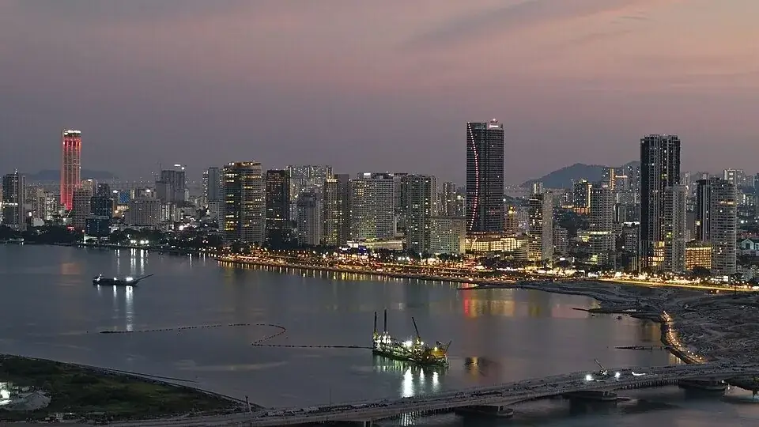
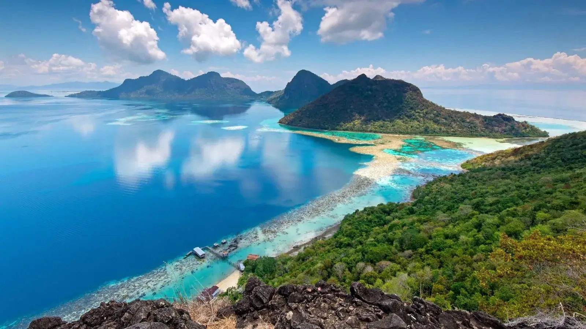
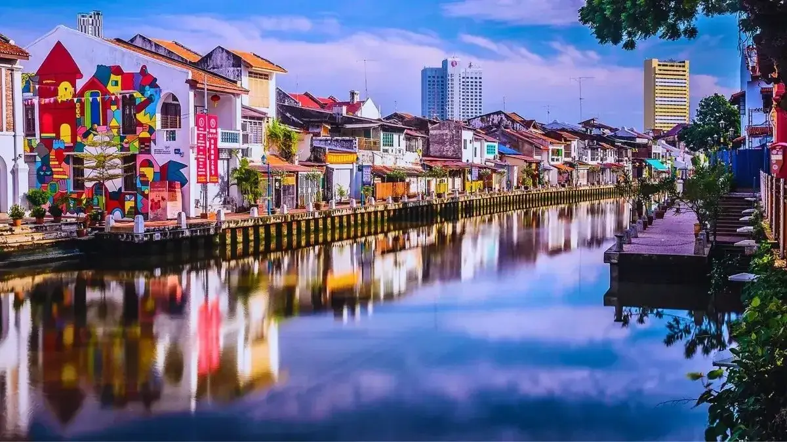

Versión con documentos: abre este archivo desde su carpeta y conserva la carpeta documentos al lado. Desde Chrome puedes instalarlo como app (menú → "Instalar aplicación") para tenerlo con icono propio en el móvil.
Modo offline: se muestran recursos locales guardados. Los mapas externos y enlaces web pueden necesitar conexión.
Itinerario gastronómico & romántico
Malasia & Singapur
Un viaje para dos · 32 días de sabores y atardeceres
24 sep – 25 oct · Iria e Iñaki
123
Días para la salidaMadrid → Kuala Lumpur · 24 sep · 10:45
Progreso del viajeDía 1 de 32
24 sep 202625 oct 2026
Descubrir
⚡ Panel rápido
Hoy, próximos días y accesos esenciales
Entrada operativa para usar la guía en viaje: abre el Copiloto, consulta los próximos días, salta a documentos, mapas, recorridos, gastos o activa el modo exterior sin recorrer todo el itinerario.
Bloque operativo previo al vuelo internacional. La opción principal aprovecha el Combinado Cercanías incluido en los billetes AVE: Chamartín → Aeropuerto T4 en Cercanías C1 y, desde allí, shuttle gratuito de Axor al hotel. Taxi o VTC queda como plan B si el horario real o un retraso desaconsejan la conexión.
Confirmado · 23–24 sep
Miércoles 23 septiembre · llegada a Madrid
AVE Santiago de Compostela → Madrid-ChamartínAVE 04404 Estándar · coche 4 · plazas 8C y 8D · localizador TYL6TR.
Llegada a Madrid-ChamartínLos billetes AVE incluyen Combinado Cercanías. Canjear los códigos del billete en autoventa o taquilla si fuera necesario.
Primera C1 útil: Chamartín → Aeropuerto T4Conexión directa y gratuita con el Combinado Cercanías. Comprobar el horario real el mismo día, porque el servicio puede variar.
Shuttle gratuito Aeropuerto T4 → AxorIr a la parada indicada en las instrucciones y llamar al hotel desde la parada si corresponde por horario.
Check-in en Axor FeriaC/ de Campezo, 4 · habitación doble · desayuno incluido para dos personas.
Opción principal gratuita: AVE → Cercanías C1 → T4 → shuttle Axor. Plan B inmediato: si el AVE llega con retraso, no queda una C1 útil o la espera del shuttle no compensa a esa hora, tomar taxi o VTC directamente desde Chamartín al hotel.
Antes de subir a la habitación: reservar en recepción el shuttle gratuito Axor → Barajas T4 de las 07:30 para la mañana siguiente. Confirmar el punto exacto de salida: las instrucciones indican la puerta de Axor Barajas, en el edificio adyacente.
Desayuno en Axor FeriaAprovechar el desayuno incluido. Conviene tener las maletas preparadas antes de bajar.
Estar listos para el shuttleAcudir con margen al punto confirmado en recepción. Servicio compartido sujeto a capacidad y tráfico.
Shuttle Axor → Barajas T4Salida recomendada y reservada. Permite desayunar y conserva margen suficiente antes del vuelo.
Vuelo internacional desde Barajas T4Prioridad: facturación, seguridad y puerta de embarque sin apurar tiempos.
Equipaje permitido en el shuttle: una maleta y un bulto de mano por persona. Como plan B, si hubiera cualquier incidencia con el servicio compartido, pedir taxi o VTC directamente a T4.
Privacidad: el PIN de la reserva no se muestra en pantalla. Está únicamente dentro del comprobante original. El shuttle hotel → aeropuerto exige reserva previa después del check-in.
🧭 Recorridos detallados
Acceso directo a los recorridos por etapa
Los recorridos de George Town, Melaka y Singapur están integrados dentro de sus días, con horario, medio de transporte, sentido de cada parada, comida/cena, alternativas gastronómicas y mapa visual offline. Estos accesos abren directamente la tarjeta diaria correspondiente.
Kuala Lumpur
Mapas y rutas urbanas ya integradas en el bloque estable de KL.
Hospital SG: +65 6322 9000 Mount Elizabeth (seguro privado)
Seguro de viaje: llamar ANTES de ir a urgencias privadas — los seguros exigen notificación previa para cubrir el gasto. Guardar número del seguro en contactos del móvil. Embajada española en KL: +60 3-2148 3566 · en Singapur: +65 6422 8000
🗺
Mapas offline: comprobando…
Comprobando zonas disponibles…
Modo viaje en curso
Copiloto del día
Detecta la fecha del dispositivo y muestra primero la jornada que toca, con el siguiente movimiento destacado para no perder tiempo durante el viaje.
El selector manual sirve si se consulta la guía antes del viaje, si el teléfono tiene otra fecha o si queréis preparar una jornada concreta.
Preparando jornada...
Itinerario Malasia & Singapur
24 septiembre – 25 octubre 2026
Siguiente movimientoAbrir la jornada para consultar el horario.
Mapas, reservas y documentos quedan dentro del día correspondiente.
Hotel: —Transporte: —
Clima de la etapaPrevisión real disponible cerca de la fecha.
Cuando haya conexión y la jornada esté dentro del horizonte de previsión, se actualizará automáticamente. Hasta entonces se muestra una referencia orientativa por etapa.
Plan principalAbrir la jornada y seguir el bloque recomendado.
Plan BReducir ritmo, priorizar comida y traslado seguro.
RitmoFlexible, sin encadenar más puntos de los necesarios.
MYRRinggit malasioSGDDólar de SingapurEURResultado en eurosOnlinecon respaldo offline
Conversor visible para las dos monedas de uso diario del viaje: ringgit malasio y dólar de Singapur. Funciona con respaldo offline y puede actualizarse desde internet.
Ringgit malasio
Equivale a (🇪🇸 EUR)
0,00€
1 MYR = 0,2200 EUR
Dólar de Singapur
Equivale a (🇪🇸 EUR)
0,00€
1 SGD = 0,6800 EUR
Actualizar cambio
Modo seguro: usando tasas de respaldo hasta actualizar desde internet.
Última actualización: 2026-06-15. Sin conexión o modo respaldo: importes orientativos; confirma cargos reales con la tarjeta.
Importes rápidos
Para contabilidad exacta, usa el cargo final de la tarjeta. El conversor sirve para decisiones rápidas durante el viaje.
VIP
Ejecución profesional del viaje
Operativa VIP · menos fricción, más tiempo útil
Esta sección no reabre decisiones del itinerario: traduce el análisis en instrucciones de uso. Sirve para saber qué confirmar, cuándo reservar, qué dejar flexible y cómo reaccionar ante lluvia, calor, cambios de mar o frontera.
Costa Este
Protocolo Redang / Perhentian
Confirmar ferris y water taxis 48 h antes y de nuevo la víspera.
Bolsa estanca pequeña: pasaporte, móvil, batería, efectivo, reserva y medicación básica.
No programar una actividad imprescindible el día de llegada ni el día de salida entre islas.
Snorkel responsable: no tocar coral, no perseguir tortugas, no alimentar fauna y usar camiseta UV.
Documentos
Calendario frontera
23–24 sep: rellenar MDAC Malasia y guardar captura/PDF offline.
19–20 oct: rellenar SG Arrival Card desde Melaka y guardar confirmación.
Usar solo enlaces oficiales: los formularios son gratuitos; evitar webs intermediarias o de pago.
Clima
Plan B sin perder el día
Langkawi: SkyCab en la primera mañana despejada; Kilim en día estable.
Cameron: Mossy Forest/BOH por la mañana; tarde ligera por lluvia o niebla.
Singapur: exteriores temprano, interiores y Gardens cubiertos por la tarde.
Días de traslado · puntos de control
Día
Tramo
Punto de control
25 sep
KLIA → Kuala Terengganu → Merang
No programar visitas. Prioridad: equipaje, efectivo básico, vuelo doméstico, taxi y dormir cerca del embarque.
28 sep
Redang → Perhentian
Confirmar mar y operador la víspera. Preparar bolsa estanca y aceptar margen horario.
3 oct
Perhentian → Kuala Besut → Kota Bharu → Kuala Lumpur
Recogida 8:45 en oficina de Alunan. Barco incluido en habitación; taxi Kuala Besut Jetty → Kota Bharu gestionado por hotel, RM295/coche, pago en recepción. Vuelo MH1397 a las 18:25.
8–10 oct
KL → Cameron → Penang
Carreteras lentas y curvas. Llevar agua, algo de abrigo y no cargar la tarde de llegada.
18 oct
Langkawi → KLIA → Melaka
Día encadenado. Objetivo: llegar a Liu Men. Si hay energía, Jonker Night Market es la prioridad real por ser domingo.
21 oct
Melaka → Singapur
Frontera variable. SG Arrival Card presentada, pasaporte a mano y primera tarde sin compromisos duros.
Kuala Lumpur
Rutas por barrios
Ordenar la ciudad en cuatro bloques cerrados: KLCC/Bukit Bintang; Batu Caves/Kampung Baru/Chow Kit; Chinatown/Merdeka; Thean Hou/Brickfields/Taman Connaught. Así se reducen cruces y taxis innecesarios.
Penang
UNESCO + Air Itam + comida
Separar George Town a pie, Kek Lok Si + Penang Hill, y ruta gastronómica. Penang Hill conviene temprano o con margen por colas y cambios de tiempo.
Melaka
Jonker bien colocado
La estancia fuerte es lunes y martes, pero el mercado nocturno funciona viernes, sábado y domingo. Por eso, si la llegada del domingo 18 lo permite, Jonker es el plan prioritario de esa noche.
Qué reservar antes y qué dejar flexible
Reservar / confirmar antes
Dejar flexible
Petronas si se quiere subir; Heli Lounge Bar al atardecer; Lake Symphony de KLCC Park por la noche; Saloma Link como paseo opcional si queda energía; restaurantes especiales; Kilim con operador fiable; bus Melaka–Singapur; formularios MDAC y SGAC al abrir ventana.
SkyBridge si el cielo está cerrado; hawkers y mercados; tardes de playa; Melaka River Cruise; caminatas largas en KL, Penang o Singapur con calor.
Regla de oro para el cliente: el documento no busca llenar todos los huecos; busca evitar búsquedas durante el viaje. Cuando haya duda entre añadir una visita o proteger un traslado, se protege el traslado.
Enlaces oficiales que conviene abrir desde esta guía
Lista práctica para usar antes de salir y durante el viaje. Las marcas se guardan solo en este navegador mediante almacenamiento local: sirven para vosotros, no se envían a ningún sitio.
Progreso checklist0/0
Antes de salir de España
Confirmaciones generales para que el viaje empiece sin fricción.
Documentos de entrada y frontera
Úsalo como recordatorio operativo, respetando siempre los plazos oficiales.
Antes de cada traslado
Especialmente útil en ferris, vuelos internos, frontera Melaka-Singapur y cambios de hotel.
Cada mañana
Lista ligera para que el día funcione sin sobrecargar el ritmo.
Ecuador del viaje · Cameron / Penang
Hacia el día 16-17, con un tercio del viaje hecho. Un único chequeo honesto antes de seguir.
Criterio de uso: esta checklist no añade obligaciones al viaje. Sirve para reducir olvidos. Si un día pide descanso, se descansa; la mejor decisión sigue siendo la que protege el ritmo general del viaje.
Agenda
Vista rápida del mes
Agenda cronológica
Acceso directo a cada jornada, ordenado de principio a fin. Pensado para consultar rápido en móvil sin recorrer todo el documento.
Un índice editorial para recorrer el documento como una guía de viaje: de las islas al cierre urbano en Singapur, con mapas, restaurantes, reservas y notas prácticas.
Revisar calendarios oficiales y agenda cultural de Kuala Lumpur, Penang, Langkawi, Melaka y Singapur poco antes de viajar. Solo se incorporarán eventos que encajen sin romper el itinerario: mercados, festivales gastronómicos, cierres de calles, obras, festivos operativos o cambios de horarios.
Lista ejecutiva de acciones que todavía no deben quedar enterradas dentro del itinerario. No sustituye las reservas confirmadas: separa lo pendiente de lo ya cerrado.
Crítico
Perhentian / Kuala Besut → Aeropuerto Kota Bharu
Confirmar con Alunan Resort el horario del barco de salida y contratar taxi privado desde Kuala Besut Jetty hasta el aeropuerto de Kota Bharu para el vuelo del 3 de octubre.
Confirmar hora exacta de barco.
Confirmar llegada estimada a Kuala Besut.
Reservar taxi a Kota Bharu Airport con margen.
Crítico
Melaka → Singapur
Comprar bus o contratar traslado privado para el 21 de octubre. Prioridad: salida por la mañana, frontera con margen y llegada cómoda a Queen Street / Bugis / Lavender o punto útil para JEN Orchardgateway. Evitar apurar la mañana con visitas de Melaka.
Revisar venta entre julio y agosto de 2026.
Evitar salidas tardías por frontera y tráfico.
Dejar la tarde de llegada sin compromisos fuertes.
Recomendable
Tour Cameron Highlands · 9 octubre
Cerrar Mossy Forest / BOH Sungai Palas con antelación. Es el día clave de Cameron y conviene evitar improvisación.
Recomendable
Langkawi · Kilim Geoforest Park
Reservar cuando se acerque la fecha y haya lectura de clima. Mejor no comprometer una salida marítima rígida si la previsión no acompaña.
Criterio: los traslados urbanos cortos —hotel → aeropuerto, llegada a hotel, Grab urbano— no se tratan como pendientes críticos. Se resuelven con Grab, taxi de hotel o recepción.
🗺 Mapas y orientación
Mapas del viaje
Centro operativo para ubicarse en ruta: mapa general, mapas por etapa, rutas de días críticos y consejos de orientación. Está pensado para móvil: primero entender, después abrir Google Maps solo cuando haga falta.
↑ Mapas interactivos con todos los puntos de cada etapa. Funcionan sin conexión una vez descargados (ver indicador en el panel Hoy).
Ruta general · 7 etapas
Islas → Kuala Lumpur → Cameron → Penang → Langkawi → Melaka → Singapur
Visión global del recorrido. La ruta enlazada es peninsular —Merang/KL/Cameron/Penang/Melaka/Singapur— porque ferris y vuelos no deben forzarse como carretera en Google Maps.
Uso offline realista: esta sección mantiene nombres, bases, consejos y enlaces preparados aunque no haya cobertura. Google Maps, mapas externos y cálculo de rutas pueden necesitar internet. Antes de salir del hotel conviene abrir/guardar en Google Maps las rutas críticas del día.
Mapas por etapa
Hoteles base, puntos de interés y criterio de movimiento.
🏝
Islas Costa Este
Merang · Redang · Perhentian
Base: Villa Wanie / Laguna Redang / Alunan Resort
Puntos y orientación
POIs Redang
Merang Jetty
Laguna Redang Island Resort
Pasir Panjang / Long Beach Redang
Marine Park Centre / Pulau Pinang
Teluk Kalong
Teluk Dalam
Redang Jetty / Kampung Jetty
POIs Perhentian
Alunan Resort / Petani Beach
Long Beach Perhentian Kecil
Coral Bay
Romantic Beach
PIR / Teluk Pauh
Turtle Point
Shark Point
Fish Point / Teluk Keke
Turtle Beach
Fishing Village
Kuala Besut Jetty
Consejos
Los trayectos de mar no siempre se reflejan bien en Google Maps.
Redang se orienta desde Laguna / Pasir Panjang y con excursiones organizadas; no tratar la isla como caminable de extremo a extremo.
En Perhentian, pactar precio, playa y hora de recogida del taxi-boat antes de embarcar.
Pedir WhatsApp del barquero, hacer prueba de mensaje y no depender solo de la cobertura móvil.
Llevar capturas de horarios, embarcaderos y puntos de recogida antes de salir del hotel.
Etapa con ferris y barcos: Google Maps no dibuja bien el recorrido marítimo. Usar este bloque como mapa de orientación de Redang y Perhentian, no como ruta rodada.
Vista operativa de alojamientos: fechas, estado, función dentro del viaje, documento de reserva y mapa. Esta sección evita buscar hoteles dentro de días, gastos o documentos cuando se está viajando.
10alojamientos / bases
32días de viaje
JENcomprometido, no pagado real
Mapsacceso directo por hotel
Islas Costa EstePendiente Booking
Villa Wanie Inn
Merang · Terengganu
25–26 sep · 1 noche
Base logística junto a Merang Jetty antes del ferry a Redang.
Cargo automático Booking; confirmar depósito de daños MYR 50 reembolsable.
Uso operativo: esta vista no sustituye los PDFs ni el Excel. Resume lo esencial para el viaje: dónde se duerme, cuándo, qué documento abrir y qué no olvidar.
💰 Cultura de propinas · Malasia vs Singapur
Malasia
· Hawkers y kopitiams: no se propina — a veces incluso se rechaza
· Restaurantes medios: el 10% de service charge suele ya incluirse
· Restaurantes altos: 10% service + 6% SST en factura. Sin propina extra
· Taxistas: redondear al alza es suficiente
· Spa y masajes: 10–15 MYR por terapeuta es bienvenido
Singapur
· Hawker centres: no se propina nunca
· Restaurantes: 10% service + 9% GST añadidos automáticamente. El total ya incluye todo
· Propina extra: no esperada ni habitual — puede incluso incomodar
· Taxistas: redondear, sin presión
· Botones de hotel: 1–2 SGD por maleta si lo piden
Resumen: en hawkers y mercados nunca se propina. En restaurantes con service charge ya está incluido. No hay obligación en ningún momento.
🍜 Comer durante el viaje
Comer en Malasia y Singapur
Vista global para decidir rápido dónde comer según etapa, energía y zona. No sustituye las rutas gastronómicas detalladas: las resume para uso diario en móvil.
PrioridadPenang, Melaka y Singapur son las grandes etapas gastronómicas.
ReglaComer por zona del día, no cruzar la ciudad por un plato aislado.
HawkersLlevar efectivo, compartir platos y evitar horas punta si queréis sentaros.
mercados + skylineAlta
Kuala Lumpur
Jalan Alor: Cena callejera cómoda; visual, animada y fácil para primera lectura hawker.
Petaling Street / Chinatown: Mercado, snacks y paseo urbano; combinar con Central Market.
Kampung Baru: Comida malaya y contraste de barrio tradicional bajo skyline.
Batu Caves temprano: No es comida, pero condiciona la logística del día; comer después en ciudad.
KL funciona por bloques; no cruzar barrios solo por perseguir un plato.
Uso práctico: si el día está cansado, elegid la opción más cercana al hotel o a la ruta. El viaje gana más con una comida bien situada que con un desvío perfecto pero agotador.
Kuala Lumpur · guía gastronómica Michelin
10 paradas Michelin/Bib Gourmand para comer bien sin perder tiempo
Selección práctica contrastada con fichas de Michelin. Se incorpora al programa como herramienta de decisión por zonas: Chinatown, Bukit Bintang y Pudu tienen prioridad; Bangsar, Segambut y Damansara quedan como opciones si encajan con la ruta real del día.
Día 10 · 3 octLlegada + Chinatown suave
Nam Heong o Lai Foong si hay energía y el horario encaja.
Día 11 · 4 octKLCC · KL Tower · Bukit Bintang
Congkak como cena cómoda; Wong Mei Kee solo si se llega a mediodía.
Día 13 · 6 octCentral Market · Chinatown
Día idóneo para Lai Foong Lala Noodles + paseo por Petaling Street.
Día 14 · 7 octBrickfields · ruta oeste
Sri Nirwana Maju puede sustituir otra comida; Taman Connaught sigue como cierre opcional.
Prioridad altaChinatown caminable
Lai Foong Lala Noodles
Chinatown · Jalan Sultan
Dirección: 99 Jalan Sultan, Kuala Lumpur City Centre, 50000 Kuala Lumpur
Probar: Lala bihun con gambas
Sopa de almejas con jengibre y vino amarillo chino. Muy buena para una comida ligera dentro del bloque Chinatown.
Encaje en programa: Día 13 · 6 oct · Chinatown / Central Market / Merdeka 118
Control de uso: antes del viaje conviene verificar horarios el mismo mes en Google Maps o Michelin. La selección se integra como apoyo al programa, no como obligación de visitar los 10 locales.
01
Bloque 1 · 24 sep – 2 oct
Islas de la Costa Este
Redang, Perhentian y el archipiélago virgen del Mar de China. Aguas de cristal, tortugas y noches estrelladas sobre la arena.
Finales de septiembre están en transición al NE Monsoon. Las tardes traen chubascos rápidos que no impiden el snorkel matinal. Protector solar 50+, hidratación constante y ropa ligera de secado rápido. El agua del mar ronda los 29°C — perfecta.
🌊 Cuaderno de viaje · Islas
Ambiente
mar de china
La etapa más luminosa del viaje: agua transparente, lanchas, snorkel y un ritmo lento de playa a playa.
Claves visuales
redang + perhentian
Redang funciona como entrada más ordenada y resort; Perhentian añade variedad, calas y un tono más libre.
Ritmo recomendado
sin prisas
Dejad margen al clima, las mareas y los water taxis. Aquí conviene planificar menos y disfrutar más.
1–2
Jue 24 – Vie 25 sep
Vuelo Madrid → Kuala Lumpur → Merang
▾
Punto de control VIP: día de tránsito puro. No añadir visitas. Prioridad: equipaje, cajero si hace falta, vuelo doméstico MH1336, traslado a Merang y descanso junto al embarque.
📱 SIM card · primera decisión al llegar a KLIA
En la planta de llegadas de KLIA T1, antes de salir de la zona de aduanas, hay puestos de operadoras justo a la salida. No salir sin SIM.
Recomendada: Maxis HotLink Tourist SIM (~60 MYR · ~13 €)
· 30 días de datos · cubre toda Malasia
· Roaming en Singapur disponible con recarga de datos adicional (~15 MYR)
· Alternativa: Celcom o Digi Tourist SIM — similar precio y cobertura
⚠️ Redang y Perhentian: cobertura mínima o nula en las islas. Descargar mapas offline en Google Maps y WhatsApp offline antes de salir de Merang o Kuala Besut. El wifi del resort funciona pero puede ser lento.
Singapur: la SIM de Maxis con roaming añadido funciona en SG. Si preferís SIM local: Singtel Tourist SIM (~15 SGD, 7 días datos ilimitados) en cualquier 7-Eleven al llegar a Changi.
10:45Vuelo EY 102 · Madrid T4 → Abu Dhabi Terminal A · llegada 19:40
21:00Vuelo EY 488 · Abu Dhabi Terminal A → Kuala Lumpur KLIA T1
08:25Llegada a KLIA T1 el 25 sep · Tras recoger equipaje, seguir hacia aduanas y Arrivals Hall para buscar cajeros Maybank o CIMB Bank
Indicaciones desde la recogida de equipajes: después de recoger las maletas en Baggage Claim, seguid las señales de Customs / Arrival Hall / Exit. Al pasar aduanas saldréis a la zona pública de llegadas del Main Terminal Building. Allí buscad señalización de ATM / Cash Withdrawal y priorizad cajeros de Maybank o CIMB Bank.
Ruta práctica: avión → inmigración → recogida de equipajes → aduanas → Arrival Hall / zona pública → cajeros Maybank o CIMB → SIM / comida / conexión hacia vuelo doméstico. Si no los veis rápido, preguntad: “Where is the Maybank or CIMB ATM in the Arrival Hall?”
Importante: hacedlo antes de pasar demasiado tiempo en tiendas o restaurantes, porque luego tenéis conexión con el vuelo interior a Kuala Terengganu. Sacar efectivo aquí os evita depender de tarjeta o cajeros en las islas.
✈️ Vuelos internacionales confirmados
Ida Etihad · referencia 8BFUJH: EY 102 Madrid T4 10:45 → Abu Dhabi Terminal A 19:40, duración 6h55. Conexión EY 488 Abu Dhabi Terminal A 21:00 → Kuala Lumpur KLIA T1 08:25 del 25 sep, duración 7h25. Equipaje: 7 kg cabina + 30 kg facturado por persona.
✈️ Vuelo interior confirmado
Malaysia Airlines · reserva EK4K32: MH1336 Kuala Lumpur KLIA T1 16:45 → Kuala Terengganu 17:45 el 25 sep. Clase Economy, duración 1h00. Equipaje: 7 kg de cabina + 25 kg facturado por persona. El check-in de Malaysia Airlines cierra 60 min antes y la puerta cierra 30 min antes.
🚕 Traslado confirmado
Merang Jetty · reserva 554510: taxi privado one-way desde Kuala Terengganu Airport (TGG) hasta Merang Jetty el viernes 25 sep 2026 a las 19:00. Importe pagado: RM63,00. Contacto: booking@merangjetty.com · Tel. +6011-31383567 · Oficina +6010-8052369.
🍽 Alternativas de comida en KLIA
Grandmama's
Malayo clásico
Nasi lemak, kaya toast, teh tarik caliente. El favorito para romper el ayuno del vuelo.
💰 Económico · KLIA Sat. Building L2
The Straits
Nyonya / Fusion malayo
Laksa penang y char kuey teow en versión sit-down. Más cómodo que la zona de comida rápida.
💰💰 Medio · KLIA Main Terminal
🏨 Alojamiento confirmado
Villa Wanie Inn · Booking.com: 1 habitación Doble Deluxe con balcón para 2 adultos. Dirección: LOT 60082 Simpang 3 Merang Kampung Merang, Setiu, 21010, Malasia. Check-in de 15:00 a 00:30 y check-out de 07:00 a 12:00. Precio aproximado: MYR 195,60. Depósito por daños: MYR 50 en efectivo a la llegada. Teléfono del alojamiento: +60139402536.
📸 Backup de fotos · hacer antes de llegar a las islas
En Redang y Perhentian la conexión es mínima — si se pierde o rompe un móvil en las islas, las fotos del viaje hasta ese momento se pierden también.
Antes de salir de KLIA o de Merang Jetty:
· Activar Google Photos o iCloud en modo "Solo WiFi" — hará backup automático en el siguiente hotel
· Hacer un backup manual de las fotos del vuelo y llegada antes de perder cobertura
· Si usáis cámara dedicada: llevar tarjeta SD de repuesto
Rutina en cada hotel con WiFi: conectarse al wifi y dejar que el backup corra 10 min antes de dormir. En KL, Penang, Cameron y Singapur la conexión es buena — aprovechar esos días para sincronizar todo.
Redang. Imagen de apertura de la etapa en las islas: arena blanca, rocas y agua turquesa para introducir visualmente la estancia en Redang.
08:15Check-out de Villa Wanie Inn · salir hacia Merang Jetty con margen real
08:45Llegada recomendada a Merang Jetty · presentar confirmación y equipaje
09:30Ferry confirmado Merang Jetty → Redang Island
10:15–10:30Llegada estimada a Redang · traslado interno / recepción de Laguna Redang Island Resort
TardeCheck-in y primera tarde en Pasir Panjang · playa, descanso y adaptación al ritmo de la isla
NochePaseo nocturno · cielo estrellado sin contaminación lumínica
⛴ Ferry confirmado
Ferry Merang Jetty → Redang Island
Merang Jetty · 26 septiembre 2026 · salida 09:30
Salida: Merang Jetty · 09:30
Llegada: Redang Island / Laguna Redang
Día de uso: Día 3 · sábado 26 sep
Operativa: Llegar al embarcadero al menos 30–45 min antes
Experiencia romántica: Pide en recepción información sobre la liberación nocturna de tortugas bebé (julio–oct es temporada). Si coincide, es uno de los momentos más mágicos del viaje. Completamente gratuito para huéspedes.
🍽 Gastronomía en Redang
Laguna Redang Resort
Buffet incluido
El resort ofrece pensión completa. Aprovecha el desayuno de fruta tropical y prueba el ikan bakar (pescado a la brasa) en la cena.
Puesta de sol con coco frío
Experiencia de playa
Compra un coco verde helado en la playa y observad el atardecer desde la arena. Simple e inolvidable.
Mapa de Redang. Referencia visual de las playas principales de la isla, incluyendo Pasir Panjang / Long Beach, Teluk Kalong, Marine Park Centre y las zonas de snorkel y tortugas.
🗺 Pulau Redang · mapa de orientación práctica
Base real
Laguna Redang · Pasir Panjang / Long Beach
Vuestra referencia diaria es Pasir Panjang: playa principal, resort, snorkel fácil, restaurantes y logística. Conviene orientarse desde aquí y no intentar recorrer toda la isla por libre.
Snorkel organizado
Marine Park Centre · Pulau Pinang
La excursión al Marine Park funciona como salida guiada: embarque desde el resort, chaleco, equipo y regreso. No tratarlo como una ruta terrestre; es un punto marítimo.
Zonas de referencia
Teluk Kalong · Teluk Dalam · Redang Jetty
Teluk Kalong y Teluk Dalam sirven para entender la isla; Redang Jetty / Kampung Jetty son puntos logísticos. Usarlos como orientación, no como objetivos obligatorios.
Lectura del mapa: Redang se disfruta mejor desde la base del resort y con salidas organizadas de snorkel. Google Maps ayuda a ubicar playas y embarcaderos, pero no debe interpretarse como una isla caminable de extremo a extremo.
09:00Excursión incluida al Marine Park (Pulau Pinang)
MañanaSnorkel · peces de colores, corales, tiburones punta negra bebé
TardePiscina del resort · cóctel de coco · lectura
NocheCena en el resort
Consejo responsable: No alimentar a los peces ni tocar coral o fauna marina. La mejor experiencia es entrar al agua con calma, observar a distancia y seguir siempre las indicaciones del guía.
Bolsa estanca con pasaporte, móvil, batería y reserva.
No colocar una excursión fuerte al llegar a Perhentian.
Logística del traslado · Redang → Perhentian
RutaRedang Beach → muelle de Merang (barco) → Kuala Besut (taxi/bus) → Perhentian Kecil (ferry)
SalidaBarco desde Redang: habitualmente 08:00–09:00 h (confirmar víspera con el resort — puede variar por estado del mar)
Merang → BesutTaxi compartido o privado ~1 h · aprox. 60–90 MYR el taxi. No hay bus directo fiable entre ambos muelles.
Ferry PerhentianDesde Kuala Besut: salidas aprox. 09:00 / 12:00 / 15:00 h · ~1 h de travesía · ~35 MYR/persona
Tiempo total3–4 h desde Redang hasta Alunan Resort (en condiciones normales)
EquipajeBolsa estanca obligatoria para el transbordo al barco de Perhentian (barcos pequeños, rocío garantizado)
EfectivoLlevar ~200 MYR en efectivo para taxi + ferry + propinas — no hay cajeros en ninguno de los dos muelles
⚠️ Plan B si el mar no lo permite: el capitán puede cancelar o retrasar con poco aviso. Si se cancela el barco de mañana, quedaros una noche más en Redang (avisad a Alunan Resort) y salid al día siguiente temprano. No intentéis salir con mar picado — los barcos son pequeños y la travesía empeora mucho.
Rumbo a Perhentian. Imagen de apertura del día 5, evocando la llegada a las aguas transparentes y playas tranquilas del archipiélago.
MañanaÚltimo desayuno en Redang
MediodíaBarco a Perhentian Kecil · llegada a Alunan Resort
TardeCala privada · explorar Long Beach por el sendero (10 min)
NocheCena romántica con sonido de olas en Alunan
🏝 Consejos prácticos para Perhentian
Efectivo y pagos
Sin cajeros · mejor llevar MYR
Llevad efectivo suficiente para taxi boats, bebidas, extras y propinas; lo ideal es retirarlo ya en KLIA T1 en Maybank o CIMB Bank. Varias guías insisten en que no hay cajeros, algunos sitios no aceptan tarjeta o aplican recargo, y el cambio en las islas puede no compensar.
Water taxi y recogida
Pactar precio y hora
Para playas remotas acordad siempre hora de recogida antes de que se vaya el barquero. De noche los trayectos pueden costar más, así que conviene cerrar también el regreso si vais a Long Beach o Coral Bay al atardecer.
Comidas y horarios
Restaurantes con cocina limitada
Fuera de los resorts, algunas cocinas cierran entre servicios o tienen horarios reducidos. Como Alunan incluye comidas, usadlo como base segura y reservad salidas gastronómicas para Long Beach, Coral Bay o Fishing Village.
🚤 Planificación desde Alunan
Preguntar al llegar: horarios, precios y WhatsApp de taxi boat a Long Beach, Coral Bay, Romantic Beach, Besar/PIR, Turtle Beach, Fish Point/Teluk Keke y Fishing Village; cobertura móvil real por zonas; estado de senderos desde Petani Beach; y posibilidad de kayak al atardecer. Así podréis ajustar los días 7–9 según mar, mareas y tiempo.
🍽 Gastronomía en Perhentian
Alunan Resort
Malayo moderno
Rendang malayo, grilled fish, smoothie bowls. El restaurante principal tiene vistas al mar y es ideal para cenar a la luz de las velas.
💰💰 Incluido en el resort
Ewan's Café
Hawker / Malayo
Ayam percik (pollo a la brasa con salsa de coco) y nasi goreng ikan bilis. Ambiente mochilero auténtico en Long Beach.
💰 Muy económico
Panorama Restaurant
Marisco / Barbacoa
Langosta fresca, gambas a la brasa y pescado del día capturado por los pescadores locales. Pídelo con belacan (pasta de gambas).
💰💰 Medio · Long Beach
🏨 Alojamiento confirmado
Alunan Resort · reserva 1598738055641416: estancia del 28 sep al 3 oct 2026 en habitación doble para 2 adultos, con 1 cama doble. Dirección: Petani Beach, Perhentian Island Kecil, Besut, 22300 Pulau Perhentian, Terengganu. Check-in 14:00–20:00 y check-out antes de las 11:00. Régimen: pensión completa y traslados en barco incluidos. Prepago completado: 1.255,15 €.
Día 6 · Snorkel en Perhentian. Imagen de apertura para la jornada de tortugas, tiburones punta negra y vida marina.
08:30Excursión semiprivada snorkel (4–6 personas)
MañanaTurtle Point · tortugas verdes · Shark Point · tiburones punta negra · Fish Point/Teluk Keke si lo ofrece el barquero
MediodíaComida en Alunan
TardeSpa en pareja · kayak transparente en la cala
NocheRendang malayo bajo las estrellas
🐠 Snorkel recomendado en Perhentian
Long Trip / excursión completa
Turtle Point · Shark Point · Fish Point/Teluk Keke · Coral Garden · Turtle Beach
La opción más completa para vuestro día de snorkel: tortugas, tiburones de arrecife de punta negra, Fish Point/Teluk Keke, jardines de coral y playas de Besar. Conviene salir temprano para evitar barcos y mejor visibilidad.
Short Trip si queréis algo más ligero
Medio día · menos cansado
Alternativa si preferís no dedicar todo el día al mar. Suele centrarse en Shark Point, Coral Garden y Turtle Point, dejando la tarde para kayak, piscina o Petani Beach.
Normas de snorkel responsable
Coral · tortugas · tiburones
No pisar coral, no tocar animales, mantener distancia con tortugas y usar camiseta UV o protector reef-safe. En Shark Point entrad tranquilos: son tiburones de arrecife pequeños.
🐢 Puntos prioritarios de snorkel · Turtle / Shark / Fish Point
Turtle Point
tortugas · mejor temprano
Punto prioritario si la visibilidad acompaña. Mantener distancia con las tortugas y evitar perseguirlas: la experiencia mejora si se entra al agua con calma y poca gente.
Shark Point
tiburón punta negra · arrecife
Entrar tranquilo y sin movimientos bruscos. Son tiburones de arrecife pequeños; el interés está en verlos en su entorno, no en forzar aproximaciones.
Fish Point / Teluk Keke
peces · rocas · snorkel cómodo
Añadirlo como parada útil para vida marina y snorkel vistoso, especialmente si el barquero lo combina con Besar, PIR/Teluk Pauh o Turtle Beach.
🤿 Snorkel y buceo extra
Big Rock, Tukung Burung y Seringgih
Puntos de snorkel / vida marina
Además de Turtle Point, Shark Point y Coral Garden, preguntad si el long trip incluye Big Rock, Tukung Burung o Seringgih Islands. Son puntos citados por viajeros por coral, peces y visibilidad variable según mar.
Sugar Wreck
Buceo · pecio
Si os apetece probar una inmersión, preguntad por Sugar Wreck. Es más de buceo que de snorkel y conviene hacerlo con centro autorizado, según nivel y condiciones.
Snorkel desde la orilla
Sin tour · flexible
Reservad ratos de snorkel sin excursión: Teluk Pauh/PIR, Teluk Keke, Coral Bay y zonas tranquilas alrededor de Kecil suelen permitir ver peces muy cerca de la playa.
Experiencia romántica imprescindible: Alquila un kayak transparente al atardecer (~50 MYR/hora). Remar sobre el agua transparente viendo los corales desde arriba mientras el cielo se tiñe de naranja es absolutamente único. Mejor entre las 17:00 y las 18:30.
Días libres en Perhentian. Playa, palmeras y agua turquesa para abrir los días 7–9 de calas, senderos y descanso.
Día 7Sendero selvático a Long Beach · comida en Ewan's Café · tarde de hamaca
🌴 Propuesta refinada para los días libres en Perhentian
Día 7 · Kecil suave: Long Beach + Coral Bay
A pie / taxi boat · atardecer fácil
Paseo a Long Beach para ver la zona con más ambiente y volver hacia Coral Bay para el atardecer. Es el día perfecto para comparar el lado animado de Kecil con una puesta de sol tranquila, sin depender demasiado de barcos.
Día 8 · Playas top de Besar
Taxi boat · PIR / Turtle Beach / Teluk Keke
Excursión de medio día o día completo a Besar: Teluk Pauh / PIR para Turtle Point, Turtle Beach para playa salvaje y Teluk Keke / KK Beach para snorkel y rocas. Pactad con el barquero hora de recogida.
Día 9 · Plan flexible y romántico
Romantic Beach · Mira/Keranji · kayak
Día sin prisas: Romantic Beach a primera hora para evitar tours, Mira/Keranji Beach si queréis una cala más tranquila, o kayak desde Alunan/Petani Beach al atardecer. Mantenerlo flexible permite ajustar por clima y mareas.
Prioridades para vosotros: como ya tenéis Alunan en Petani Beach, conviene usar taxi boat para playas remotas y reservar los senderos solo si el hotel confirma que están transitables. Para playas pequeñas como Romantic Beach, preguntad por la marea y evitad el atardecer si queréis tranquilidad, porque varios tours terminan allí.
Día 8Taxi boat a Coral Garden y Romantic Beach · mirador de las Perhentian
Día 9Día de amortiguación · piscina infinita · sin planes ni alarmas
🗺 Mapa interactivo de Perhentian
📍 Islas · Costa Este⏳ Esperando…
Hoteles (2)Visitas (5)Transporte (1)
Mapa de orientación de Perhentian. Mapa interactivo de referencia para ubicar Alunan/Petani, Long Beach, Coral Bay, Besar, Turtle Point, Shark Point, Fish Point/Teluk Keke y Fishing Village. Funciona sin conexión una vez cargado con WiFi la primera vez.
🏝 Mejores playas de las Perhentian y cómo llegar
Long Beach · Perhentian Kecil
Ambiente · arena blanca · fácil acceso
Cómo llegar: desde Alunan, taxi boat a Long Beach o paseo hasta la zona de Long Beach si el sendero está practicable. Es la playa más animada de Kecil, con bares, escuelas de buceo y restaurantes. Mejor para ir de tarde/noche que para buscar silencio.
Coral Bay · Perhentian Kecil
Atardecer · restaurantes · conexión a pie
Cómo llegar: desde Long Beach hay un sendero corto y fácil hasta Coral Bay. También podéis ir en taxi boat desde Alunan. Es buena zona para ver el atardecer y cenar, aunque hay más barcos que en playas vírgenes.
Romantic Beach · Perhentian Kecil
Cala pequeña · pareja · mareas
Cómo llegar: únicamente en taxi boat, normalmente desde Coral Bay o Long Beach. Conviene ir con marea baja o a primera hora porque al subir la marea la arena puede reducirse mucho. Ideal para una parada corta y fotos.
Adam & Eve Beach · Perhentian Kecil
Salvaje · snorkel · taxi boat
Cómo llegar: taxi boat desde Coral Bay o Long Beach. Es más salvaje y menos urbanizada; buena para combinar con Romantic Beach en una excursión de medio día. Llevad agua y algo para picar.
Turtle Beach · Perhentian Besar
Naturaleza · tortugas · excursión
Cómo llegar: taxi boat o excursión de snorkel desde Kecil/Besar. Suele incluirse en tours de snorkel junto a Turtle Point y otros puntos de vida marina. Mejor por la mañana, con mar más calmado.
PIR Beach / Teluk Pauh · Perhentian Besar
Snorkel · aguas tranquilas · tortugas
Cómo llegar: taxi boat a Perhentian Island Resort / Teluk Pauh. Playa amplia, agua clara y buen acceso para snorkel. Es una de las zonas más cómodas para nadar en Besar.
Flora Bay · Perhentian Besar
Tranquila · ruta selvática · taxi boat
Cómo llegar: taxi boat desde Kecil o caminando en Besar por la ruta Barat Jetty → PIR → Flora Bay. Buena opción para combinar sendero, comida tranquila y vuelta en barco.
Petani Beach · Perhentian Kecil
Zona Alunan · calma · base del hotel
Cómo llegar: es vuestra playa base en Alunan Resort. Perfecta para días de poca logística: descanso, kayak, atardecer y snorkel suave sin depender de traslados.
Cómo moverse entre playas: en las Perhentian no hay transporte público terrestre. Para cambiar de playa o de isla se usan sobre todo taxis acuáticos; el precio se acuerda con el barquero o lo organiza el hotel. Para playas pequeñas como Romantic Beach o Adam & Eve, preguntad siempre por la marea y pactad hora de recogida.
📲 Taxi-boat, cobertura y WhatsApp del barquero
Antes de embarcar
precio · ruta · hora de recogida
Cerrar siempre precio total, playa exacta y hora de recogida. Para Besar, Turtle Beach, Romantic Beach o Fishing Village, no salir sin tener acordado el regreso.
WhatsApp del barquero
captura · cobertura irregular
Pedir número de WhatsApp, hacer una llamada/mensaje de prueba y guardar captura del barco o nombre. La cobertura puede fallar por cala, lluvia o batería: no depender solo del móvil.
Plan de seguridad
Alunan como base
Avisar en recepción si vais a playas remotas y preguntar qué compañía/barquero recomiendan. En caso de duda, organizar el taxi-boat desde Alunan aunque cueste algo más.
🌅 Kayak, atardecer y noche en Kecil
Kayak desde Petani / Alunan
Atardecer · calas cercanas
Si el mar está calmado, el kayak al atardecer es uno de los planes más bonitos y flexibles. Confirmad con Alunan zonas seguras y evitad alejaros si cambia el viento.
Coral Bay sunset
Mejor puesta de sol en Kecil
Coral Bay suele recomendarse para el atardecer en Kecil. Es buena combinación con cena sencilla y vuelta en taxi boat pactado.
Long Beach de noche
Música · fuego · ambiente mochilero
Si queréis una noche con más ambiente, Long Beach concentra bares, música y a veces shows de fuego. Para un viaje en pareja, mejor ir a verlo una noche y volver antes de muy tarde.
🏝 Playas priorizadas según vuestro alojamiento
Imprescindibles en Kecil
Romantic · Coral Bay · Long Beach · Mira/Keranji
Romantic Beach mejor a primera hora; Coral Bay para atardecer y cena sencilla; Long Beach para ambiente nocturno; Mira/Keranji para playa más tranquila si queréis escapar de la zona principal.
Imprescindibles en Besar
Turtle Beach · Teluk Keke · PIR/Teluk Pauh
Turtle Beach es la playa salvaje más especial; Teluk Keke destaca por rocas y snorkel; PIR/Teluk Pauh es cómodo para nadar y buscar tortugas cerca del muelle/zona de boyas.
Plan cultural corto
Fishing Village · mezquita sobre el mar
Si os apetece ver la parte local de Kecil, añadid Fishing Village durante un tour largo de snorkel o como parada en taxi boat. Es más cultural que playero: casas, escuela, vida local y mezquita sobre el agua.
🥾 Senderos que merece la pena valorar
Coral Bay → Long Beach
Corto · práctico · Kecil
El sendero más útil para moverse por Kecil. Puede hacerse de día para enlazar playas, pero no lo haría de noche salvo que el hotel confirme que está bien iluminado y seguro.
Coral Bay → Fishing Village
Más largo · cultural · con paradas
Ruta más larga por Kecil para combinar calas, selva y la aldea local. Mejor hacer solo un tramo y volver en taxi boat si hace calor o cae la tarde.
Besar: Barat / PIR / Flora Bay
Selva suave · playas · taxi boat
Si vais a Besar, podéis combinar un sendero corto con playa y volver en barco. Llevad calzado cerrado: varias guías advierten que con chanclas la selva se hace incómoda.
🥾 Rutas y senderos en Perhentian
Perhentian Besar · Barat Jetty → Perhentian Island Resort → Flora Bay
3,2 km · 1 h 20 min · fácil · solo ida
Sendero selvático que comunica dos de las playas principales de Besar. Sale del muelle de Barat, pasa por la zona del Perhentian Island Resort y asciende por la selva hasta Flora Bay. La vuelta puede hacerse por el mismo camino o en taxi boat desde Flora Bay.
Perhentian Kecil · Coral View / Coral Bay → Long Beach
1,37 km aprox. · fácil · solo ida
Ruta muy sencilla que conecta dos de las zonas más concurridas de Kecil. Útil para ir andando entre Coral Bay y Long Beach sin depender siempre del taxi boat. En Wikiloc aparece como recorrido fácil, con paso por Ewan's Café.
Perhentian Kecil · Long Beach, Coral Bay, Rainforest Beach y Keranji
6,41 km · 2 h 20 min · fácil · circular
Paseo de tarde con sombra y tramos empedrados entre playas pequeñas. Permite combinar caminata y paradas de snorkel. El trazado pasa por Coral Bay, Rainforest Beach y Keranji Beach, con opción de ampliar hacia el sur de la isla.
Consejos para caminar en Perhentian: salid temprano o después de las 16:30 para evitar el calor fuerte; llevad zapatilla cerrada, agua, repelente y algo de efectivo para taxi boat si decidís no volver andando. En selva húmeda el terreno puede ser resbaladizo aunque la dificultad técnica sea fácil.
🛶 Fishing Village y vida local
Plan cultural corto: si queréis ver algo más que playas, incluid Fishing Village como parada de taxi boat o dentro de una ruta por Kecil. No es una visita “bonita” en sentido turístico, sino una mirada a la vida local: muelle, casas, escuela, pequeños restaurantes y mezquita. Id con respeto y sin convertirlo en safari fotográfico.
🍽 Más opciones gastronómicas en Perhentian
Ewan's Café
Malayo hawker
Ayam percik, mango shake, roti canai. El lugar más auténtico y económico de Long Beach. Céntrico, con mesas en la arena.
💰 Muy económico
Flora Bay Restaurant
Marisco / Internacional
En el lado más tranquilo de la isla. Pescado del día a la brasa, pasta, pizza. Vistas idílicas y menos turistas que Long Beach.
💰💰 Medio
Nasi Lemak Warung
Desayuno malayo
El nasi lemak más barato de la isla. Arroz con leche de coco, huevo, ikan bilis, sambal. Perfecto antes del snorkel matutino.
💰 ~5 MYR
Experiencia única: El mirador al que se accede desde Coral Bay permite ver las dos islas Perhentian al mismo tiempo (Kecil y Besar). Al amanecer, con niebla sobre el mar, es una de las vistas más extraordinarias de toda la ruta. Subida de 20 min por sendero de tierra.
Fuentes usadas para refinar Perhentian: blogs viajeros sobre Perhentian coinciden en priorizar snorkel en Turtle Point, Shark Point y Coral Garden; playas como Romantic Beach, Coral Bay, Long Beach, Mira/Keranji, Turtle Beach, Teluk Keke y PIR/Teluk Pauh; y moverse entre playas remotas con taxi boat o kayak según mar y mareas.
Notas añadidas tras revisar más guías: las nuevas páginas refuerzan tres ideas: llevar efectivo y no depender de cobertura, pactar siempre hora de recogida con el water taxi, y combinar los días de playa con snorkel, kayak, senderos cortos y una visita opcional a Fishing Village para no repetir planes.
🧭 Kuala Lumpur · guía visual del bloque
El bloque de Kuala Lumpur se lee de forma editorial, casi como una guía impresa: primero un mapa general, después una pequeña guía de barrios y, a continuación, los planos diarios. Así la ciudad se entiende como conjunto antes de bajar al detalle de cada jornada.
Cómo leer los mapas: el mapa general sirve para situar el bloque completo; los planos diarios desarrollan cada jornada. La simbología mantiene la misma lógica en todo el documento: comida, mercados, visitas/paseos y atracciones aparecen diferenciados con iconos y color.
Días del bloque
Día 10 · llegada nocturna y check-inDía 11 · KLCC, Heli Lounge, Bukit Bintang y Lake SymphonyDía 12 · Batu Caves, Kampung Baru y Chow KitDía 13 · Chinatown y Merdeka 118Día 14 · Brickfields, TRX y plan nocturno
Índice visual de barrios y zonas
🏙 KLCC
skyline moderno
Petronas, parque y centro financiero. Es la Kuala Lumpur más icónica y pulida.
Día 11
🍜 Bukit Bintang
comida + vida urbana
Zona muy viva para compras, paseos urbanos y la cena callejera de Jalan Alor.
Día 11
🧧 Chinatown
mercado + patrimonio
Petaling Street, Central Market y el street art de Kwai Chai Hong forman el núcleo histórico más animado.
Día 13 · Día 10 solo si hay energía
☕ Chow Kit / The Row
mercado + cafés
Mercado tradicional, shophouses rehabilitadas y una atmósfera más local y pausada.
Día 12
🥥 Kampung Baru
barrio malayo
Contraste con el centro moderno: casas bajas, comida local y ambiente de barrio.
Día 12
🕌 Brickfields / Little India
cultura india
Calles con flores, templos y tiendas. Muy útil para leer la diversidad cultural de la ciudad.
Día 14
🏙️ TRX / Bukit Bintang
ciudad contemporánea + paseo urbano
TRX, Pavilion y Bukit Bintang: una parte más urbana, contemporánea y útil para tarde/cena.
Día 14
🪨 Batu Caves
excursión norte
Gran hito religioso y visual; se entiende mejor como salida al norte antes de volver al centro.
Día 12
10
Sáb 3 oct
Kota Bharu → Kuala Lumpur · llegada tranquila
▾
Punto de control VIP: salida sensible isla → aeropuerto → KL. Salir con margen, llevar efectivo pequeño para taxi/water taxi y dejar la tarde urbana flexible.
🚕 Traslado gestionado por Alunan · Kuala Besut Jetty → Kota Bharu
03/10/2026 · salida Perhentian → Kota Bharu → Kuala Lumpur
recogida8:45 · Oficina de Alunan
referenciaRES8666 · Ignacio Soto González · 2A
taxiRM295 / coche · pago en recepción
conductorAzri · +60 111-797 7202
Operativa: el barco Perhentian → Kuala Besut queda incluido en la habitación. El taxi Kuala Besut Jetty → Kota Bharu está gestionado por el hotel y permite aprovechar, si hay margen, Mercado Siti Khadijah / templo antes del vuelo MH1397 a las 18:25.
8:45Recogida en oficina de Alunan · barco Perhentian → Kuala Besut incluido en habitación · taxi Kuala Besut Jetty → Kota Bharu gestionado por hotel
MediodíaConsigna de equipaje en KBR si se confirma · visita al Mercado Central Siti Khadijah
AlmuerzoNasi kerabu en el Mercado Siti Khadijah · especialidad de Kelantan
⏱ Tarde en Kota Bharu · 13:30–16:30 h (con maletas en consigna)
Opción ACultural: Muzium Islam (entrada gratuita, 5 min del mercado) → taxi a Pantai Cahaya Bulan / PCB Beach (10 min, ~8 MYR) — la única playa de ciudad de todo el viaje, con ambiente local muy diferente a Redang o Perhentian
Opción BDescanso: Café Bawah Pokok o zona de cafés cerca del mercado · té tarik, kuih y lectura. Kota Bharu tiene la cultura de café más conservadora de Malasia — vale la pena experimentarla.
AtenciónCiudad conservadoramente islámica: código de vestimenta en espacios públicos (hombros y rodillas cubiertos), no fotografiar sin permiso en espacios religiosos
VueloEstar en el aeropuerto KBR a las 17:30 h como máximo — el vuelo MH1397 sale a las 18:25 y es un aeropuerto pequeño pero conviene no apurar
⚠️ Si la consigna de equipaje en KBR no está disponible, quedaos cerca del mercado y no hagáis excursión a la playa con las maletas — el taxi PCB con equipaje es incómodo.
18:25Vuelo MH1397 · Kota Bharu (KBR) → Kuala Lumpur KLIA T1 · llegada 19:40 · equipaje facturado 25 kg
20:15–21:30Traslado recomendado KLIA T1 → Santa Grand Signature en Grab/taxi · opción más cómoda de noche con equipaje
NocheCheck-in en Santa Grand Signature Kuala Lumpur · paseo muy suave por Kwai Chai Hong / Chinatown solo si hay energía
🚕 Traslado KLIA → Kuala Lumpur · decisión recomendada
Opción recomendada
Grab / taxi directo
Para vuestra llegada nocturna desde Kota Bharu, con equipaje y check-in pendiente, lo más sensato es ir directos del KLIA T1 al Santa Grand Signature. Evita transbordos en KL Sentral y os deja en la puerta del hotel.
Opción rápida
KLIA Ekspres + Grab
El KLIA Ekspres conecta KLIA con KL Sentral en torno a 30 minutos y cuesta RM55 por persona. Es excelente si se viaja ligero o de día, pero desde KL Sentral aún habría que tomar Grab/taxi al hotel.
Opción económica
bus a KL Sentral
El bus es el recurso barato, pero no lo usaría esta noche: tras ferry, traslado, vuelo interno y llegada a KL, ahorrar unos ringgits no compensa el cansancio ni el tiempo adicional.
Criterio operativo: al aterrizar en KLIA T1, recoger equipaje, pedir Grab desde la zona oficial de e-hailing o usar taxi oficial del aeropuerto. Objetivo: llegar al hotel sin fricción. La ciudad empieza al día siguiente; esta noche manda el descanso.
Malaysia Airlines · reserva EKFFE5: MH1397 Kota Bharu 18:25 → Kuala Lumpur KLIA T1 19:40 el 3 oct. Clase Economy, duración 1h15. Equipaje: 7 kg de cabina + 25 kg facturado por persona.
🛍 Mercado opcional por día de la semana
Sábado noche · Kampung Baru Night Market: por calendario, este es el único día de Kuala Lumpur que coincide con el mercado nocturno de Kampung Baru. Como el vuelo desde Kota Bharu llega a KLIA T1 a las 19:40, solo lo dejaría como plan opcional si no hay retrasos y os quedan fuerzas. Si preferís una noche más fácil, mantened Chinatown/Kwai Chai Hong cerca del hotel.
🍽 Gastronomía en Kota Bharu
Mercado Siti Khadijah
Kelantan tradicional
Planta alta del mercado: nasi kerabu (arroz azul teñido con bunga telang, pollo, coco rallado), nasi dagang, ayam percik. El más auténtico del país, gestionado solo por mujeres.
💰 Muy económico · 8:00–14:00
Kafe Kleptokrat
Casual / Malayo nocturno
Nasi lemak, teh tarik, roti canai. Ambiente local auténtico en Chinatown. Ideal para la cena de llegada a KL.
💰 Económico · Chinatown
🏨 Alojamiento confirmado
Santa Grand Signature Kuala Lumpur · reserva 1598738056516025: estancia del 3 oct al 8 oct 2026. Habitación Bong Soo Deluxe Twin para 2 adultos, con 2 camas individuales. Dirección: No. 36, Jalan Ampang, 50450 Kuala Lumpur. Check-in después de las 15:00 y check-out antes de las 12:00. Prepago completado: 302,35 €. Incluye desayuno para 2 personas del 4 al 8 oct. Teléfono del hotel: +60-3-20271969. Abrir comprobante.
🏨
Santa Grand Signature Kuala Lumpur
No. 36, Jalan Ampang · 3–8 oct · habitación Bong Soo Deluxe Twin · desayuno incluido
Torres de cristal, cuevas sagradas, callejones dorados y la escena gastronómica más vibrante del Sudeste Asiático.
Desde
Kota Bharu (KBR) Airport
~1 h 15 min
Vuelo
Hotel
Santa Grand Signature KL
Grab recomendado de noche · KLIA Express + taxi como alternativa
🌤Clima · 3–7 oct24–33°C · Calor intenso▾
Tormentas vespertinas intensas
🌡️Temperatura24–33°C
🌧️Lluvia / mes220–260 mm
☀️Índice UVUV 10 (muy alto)
Octubre es uno de los meses más lluviosos en KL. Las tormentas suelen llegar entre las 15:00 y las 18:00, duran 1–2 horas y son fuertes. Planificar actividades de interior en esa franja (museos, centros comerciales, descanso en el hotel). Las mañanas son generalmente despejadas y son la mejor ventana para visitas al aire libre.
🔗 Referencia de mercados nocturnos
Fuente para mercados nocturnos en Kuala Lumpur y Malasia: referencia práctica para consultar pasar malam, food streets y consejos de comida callejera durante el bloque urbano de Kuala Lumpur. Abrir guía de mercados nocturnos de Malasia.
🧭 Kuala Lumpur reordenado por zonas
Día
Zona principal
Por qué queda mejor así
Sáb 3 oct
Llegada + Chinatown suave
Tras el vuelo, solo paseo cercano al hotel: Kwai Chai Hong si hay energía.
Dom 4 oct
KLCC · KL Tower · Bukit Bintang
Ruta de skyline y centro moderno, terminando en Jalan Alor sin retroceder.
Lun 5 oct
Batu Caves · Kampung Baru · Chow Kit · The Row
Bloque norte/noreste: cuevas por la mañana y barrios locales de vuelta hacia el centro.
Mar 6 oct
Masjid Jamek · River of Life · Sultan Abdul Samad · Merdeka Square · Central Market · Chinatown · Merdeka 118
Todo queda caminable: primero Masjid Jamek / River of Life / Dataran Merdeka y después Central Market, Chinatown, microparadas de Jalan Sultan y Merdeka 118.
Mié 7 oct
Thean Hou · Brickfields · TRX/Bukit Bintang
Ruta oeste/sur cómoda, con Taman Connaught solo si apetece mercado nocturno grande.
Mié 7 oct
Taman Connaught Night Market
Opción fuerte de miércoles: mercado muy largo/local; ir temprano y con efectivo.
Criterio de orden: la ruta de Kuala Lumpur queda agrupada por zonas para evitar idas y vueltas: skyline moderno el domingo, norte/local el lunes, Merdeka Square–Chinatown–Merdeka 118 el martes y Brickfields–TRX/Bukit Bintang el miércoles. Los mercados de día fijo se mantienen como opcionales según energía y horario.
Kuala Lumpur · 4 jornadas explicadas día por día
Mapas de Kuala Lumpur · recorridos 4–7 de octubre
Estos mapas acompañan los recorridos de Kuala Lumpur con un plano siempre disponible, incluso sin conexión. Las líneas son orientativas y los botones abren Google Maps para navegación real.
Domingo 4 de octubre · Día 1 KL explicadoKLCC, Petronas, KL Tower, rooftops, Jalan Alor y Lake Symphony
Este primer día está pensado para entrar en Kuala Lumpur por su imagen más potente: torres, parque, miradores y noche urbana. La lógica es empezar con Petronas y KLCC cuando todavía hay energía, descansar en las horas más duras y cerrar con rooftop, Jalan Alor y el espectáculo de fuentes. El recorrido aprovecha que el Santa Grand Signature queda muy bien situado entre KLCC, Bukit Nanas y KL Tower.
Hora
Plan
Medio
Sentido de la parada
09:00
Salida del Santa Grand Signature hacia KLCC.
A pie si el clima acompaña; Grab si llueve o hace mucho calor.
Primer contacto con Jalan Ampang y orientación de la zona financiera.
09:25
Exteriores de Petronas y Suria KLCC.
A pie.
Fotos iniciales y ubicación de accesos antes de la visita principal.
10:00
Petronas Twin Towers: Skybridge y Observation Deck.
Visita reservada.
La visita icónica del skyline: no solo subir, sino entender la escala del KLCC.
11:30
Paseo por KLCC Park.
A pie.
Mejor luz y menos cansancio para las fotos del lago y las torres.
12:30
Comida en entorno KLCC.
A pie.
Comida fácil antes de la pausa: no conviene alejarse todavía.
14:15
Regreso al hotel y descanso.
A pie o Grab.
Pausa estratégica para evitar que el calor arruine la tarde.
15:30
KL Forest Eco Park / Bukit Nanas.
A pie desde el hotel.
Paseo breve y verde junto al alojamiento; si hace demasiado calor, puede recortarse sin afectar al día.
16:45
KL Tower / Menara KL.
A pie corto o Grab.
Mirador panorámico complementario a Petronas; buena lectura de la ciudad.
18:30
Rooftop de atardecer.
Grab hacia Heli Lounge / alternativa elegida.
Colocar el rooftop antes de cenar evita desplazamientos nocturnos innecesarios.
20:00
Cena en Jalan Alor.
A pie desde Bukit Bintang.
Experiencia urbana, callejera y nocturna; mejor recorrer antes de sentarse.
21:30
Lake Symphony o paseo por Bukit Bintang/Pavilion.
A pie + Grab final.
Cierre flexible: fuentes, luces, compras o vuelta tranquila según energía.
Comida recomendada
Nasi Kandar Pelita KLCC: opción práctica y local, buena para una primera comida malasia-india sin complicar el recorrido.
Cena recomendada
Jalan Alor: no es cena fina, sino experiencia callejera y ambiente nocturno. Recorrer primero la calle y elegir después.
Alternativas de restaurantes
Lot 10 Hutong: más cómodo y ordenado si llueve o hay cansancio.
Bijan: cocina malaya más cuidada, para una cena menos callejera.
Madam Kwan’s KLCC/Pavilion: opción fácil y segura dentro de centros comerciales.
Rooftop / copa
Heli Lounge Bar para una experiencia más original; SkyBar o Vertigo si se busca una copa más cómoda y elegante.
Lunes 5 de octubre · Día 2 KL explicadoBatu Caves, Masjid Wilayah, Kampung Baru, Chow Kit, The Row y Saloma
Este día queda replanteado para evitar museos y jardines botánicos. La mañana concentra dos visitas potentes fuera del centro —Batu Caves y Masjid Wilayah— y la tarde vuelve a barrios con vida real: Kampung Baru, Chow Kit y The Row. La noche se deja flexible con Saloma Bridge o una copa cerca de KLCC, sin cargar el día con desplazamientos de relleno.
Hora
Plan
Medio
Sentido de la parada
09:00
Salida hacia Batu Caves.
Grab recomendado; alternativa económica KTM desde KL Sentral.
Para una pareja, Grab ahorra transbordos y permite llegar antes del calor fuerte.
09:40
Batu Caves: escalinata, estatua de Murugan y cueva principal.
A pie dentro del recinto.
Visita espiritual y paisajística; subir sin prisa, con agua y ropa adecuada.
11:45
Traslado a Masjid Wilayah.
Grab.
La mezquita queda mejor como parada en ruta que como excursión aislada.
12:15
Masjid Wilayah Persekutuan.
A pie en el recinto; tour si está disponible.
Arquitectura islámica monumental, fotogénica y menos saturada que otros puntos turísticos.
13:15
Traslado a Kampung Baru.
Grab.
Regreso progresivo hacia el centro sin volver todavía al hotel.
13:30
Comida en Kampung Baru.
A pie.
El barrio tiene sentido gastronómico: aquí el plato local refuerza la visita.
14:30
Paseo por Kampung Baru.
A pie, tramos cortos.
Casas bajas, restaurantes locales y contraste directo con el skyline de KLCC.
15:15
Chow Kit Market y entorno.
A pie o Grab corto.
Mercado local y vida cotidiana; interesante si se asume como experiencia sensorial, no como monumento.
16:15
The Row KL.
A pie / Grab corto.
Cafés y shophouses renovadas: pausa urbana amable antes del descanso.
17:15
Descanso en hotel.
Grab.
Después de Batu Caves y calor, esta pausa evita llegar agotados a la noche.
19:00
Saloma Link Bridge y entorno KLCC.
Grab + paseo.
Cierre visual muy bonito: barrio malayo, puente iluminado y skyline.
20:00
Cena flexible o copa en WET Deck/SkyBar.
A pie/Grab.
Según energía: cena local sencilla, rooftop o regreso tranquilo.
Comida recomendada
Nasi Lemak Wanjo Kg Baru: nasi lemak clásico en Kampung Baru; encaja por barrio, horario y sentido local.
Cena recomendada
Limapulo Baba Can Cook: buena opción Nyonya/Peranakan cerca del eje Chow Kit–The Row, más cómoda que repetir street food.
Alternativas de restaurantes
Yut Kee: clásico para desayuno tardío/comida si se reorganiza el día.
Kin Kin Chili Pan Mee: opción local contundente en Chow Kit.
Suraya Seafood Kampung Baru: alternativa local si apetece cena malaya más de mesa.
Rooftop / copa
Para copa, WET Deck queda muy bien si se cierra por Saloma/KLCC. Si el día pesa, mejor algo sencillo en The Row.
Martes 6 de octubre · Día 3 KL explicadoMasjid Jamek, Merdeka Square, Central Market, Chinatown y Merdeka 118
Este es el día histórico y cultural, pero sin museos. La ruta tiene sentido casi continuo a pie: River of Life, Masjid Jamek, Merdeka Square, Central Market y Chinatown forman una secuencia compacta. La tarde se reserva para cafés, callejones patrimoniales y Merdeka 118 como cierre visual, sin forzar grandes desplazamientos.
Hora
Plan
Medio
Sentido de la parada
09:00
Salida hacia Masjid Jamek / River of Life.
A pie desde el hotel.
Inicio lógico: el origen fluvial e histórico de Kuala Lumpur.
09:20
River of Life.
A pie.
Confluencia de los ríos Klang y Gombak; lectura urbana antes de los edificios coloniales.
10:00
Masjid Jamek, si el horario de visita lo permite.
A pie.
Parada patrimonial breve, con respeto a horarios de oración y vestimenta.
10:45
Merdeka Square y Sultan Abdul Samad Building.
A pie.
La Kuala Lumpur institucional y colonial; imprescindible para entender la ciudad.
11:30
Central Market.
A pie.
Artesanía, batik y pausa protegida del calor sin entrar en formato museo.
12:30
Comida en Chinatown.
A pie.
La zona ofrece cocina local con buena relación calidad/precio y continuidad de ruta.
13:30
Petaling Street y Chinatown.
A pie.
Comercio tradicional, cafés, templos y ambiente de barrio.
14:15
Kwai Chai Hong / cafés.
A pie.
Callejón patrimonial fotogénico, mejor como pausa lenta que como check rápido.
16:30
Merdeka 118 y entorno.
A pie largo o Grab corto.
Cierre visual contemporáneo del día histórico; contrasta con Chinatown y Merdeka Square.
18:00
Descanso en hotel.
Grab.
Separar el bloque cultural de la cena mejora la noche.
20:00
Cena en Pudu/Chinatown o cena especial opcional.
Grab.
El día admite una cena clásica local o una opción más gastronómica.
Comida recomendada
Lai Foong Lala Noodles: fideos con almejas, muy bien situado entre Central Market y Chinatown.
Cena recomendada
Sek Yuen: clásico cantonés en Pudu, buena cena de mesa después de un día muy peatonal.
Alternativas de restaurantes
Old China Café: ambiente histórico y cocina Nyonya en Chinatown.
Chocha Foodstore: opción más contemporánea y cuidada en el entorno.
Merchant’s Lane: más informal, útil para pausa/cena ligera.
Rooftop / copa
Si se quiere vista nocturna tras Sek Yuen, SkyBar funciona muy bien; si se prefiere no cruzar más, cerrar en Chinatown es suficiente.
Miércoles 7 de octubre · Día 4 KL explicadoThean Hou, Brickfields, TRX/Bukit Bintang y Taman Connaught Night Market
El último día completo queda rediseñado sin museos ni jardines botánicos. La mañana se dedica a Thean Hou y Brickfields, que aportan capas china e india de la ciudad. La tarde se traslada a un Kuala Lumpur más contemporáneo —TRX y Bukit Bintang— y la noche se reserva para Taman Connaught, que al ser miércoles encaja especialmente bien como cierre local y gastronómico.
Hora
Plan
Medio
Sentido de la parada
09:00
Salida hacia Thean Hou Temple.
Grab.
No compensa llegar en transporte público: el templo está en alto y la mañana es mejor.
09:25
Thean Hou Temple.
A pie en el recinto.
Templo chino, linternas, terrazas y vistas urbanas; muy fotogénico temprano.
10:45
Traslado a Brickfields / Little India.
Grab.
La ruta pasa de la capa china a la india sin perder media mañana.
11:10
Paseo por Brickfields.
A pie.
Tiendas, flores, textiles, templos y vida local; mejor pasear que buscar un único monumento.
12:30
Comida en Brickfields.
A pie.
La comida india del sur da sentido gastronómico al barrio.
14:15
Regreso al hotel y descanso.
Grab.
Pausa necesaria antes de una tarde/noche de mercado y desplazamientos.
16:30
The Exchange TRX.
MRT o Grab.
KL contemporáneo, arquitectura, tiendas y paseo urbano cubierto si llueve.
17:45
Bukit Bintang / Pavilion.
Grab corto o MRT + paseo.
Café, compras ligeras o paseo urbano antes de salir al mercado nocturno.
19:00
Taman Connaught Night Market.
Grab recomendado.
Mercado nocturno de miércoles: comida, puestos y ambiente local. Mejor llegar con hambre y paciencia.
22:15
Regreso al hotel.
Grab.
No forzar transporte público de noche después del mercado.
Comida recomendada
MTR 1924 Brickfields: vegetariano del sur de India, muy coherente con Little India y excelente para el mediodía.
Cena recomendada
Taman Connaught Night Market: aquí la cena es el propio mercado; ir probando puestos en vez de sentarse demasiado pronto.
Alternativas de restaurantes
Restoran Sri Nirwana Maju: alternativa india si se decide ir hacia Bangsar.
Lot 10 Hutong: plan B cómodo si llueve o se descarta Connaught.
Chim by Chef Noom: opción de cena especial si se prefiere cerrar con restaurante y no con mercado.
Rooftop / copa
Si se quiere copa antes de Connaught, Vertigo o WET Deck; si se mantiene el mercado, mejor no añadir rooftop para no saturar la noche.
Nota técnica: el mapa es una guía visual orientativa, no un navegador giro a giro. La navegación real se mantiene fuera del HTML para no prometer rutas offline que no puede calcular de forma fiable.
11
Dom 4 oct
Día 1 KL · Petronas, rooftops y Lake Symphony
▾
09:15–09:30Salida del Santa Grand Signature Kuala Lumpur
10:00Torres Petronas + KLCC Park · fotos exteriores, puente de observación opcional y localización de la fuente Lake Symphony para volver de noche
11:30–12:30Suria KLCC · pausa / comida temprana
13:00–14:15KL Tower / Menara Kuala Lumpur · mirador opcional; si se prioriza Heli Lounge, convertir este tramo en visita exterior o descanso
14:45–16:30Bukit Bintang / Pavilion KL · paseo urbano, cafés, aire acondicionado y margen de calor
16:30–17:15Lot 10 Hutong · merienda ligera o pausa antes del atardecer
17:15–17:45Rooftop de atardecer · Heli Lounge como plan A; Vertigo o SkyBar como alternativas si cambia el acceso/reserva
18:00–19:15Heli Lounge / Vertigo / SkyBar · skyline al atardecer, copa y Torres Petronas iluminándose
19:30–20:45Jalan Alor · cena callejera, Wong Ah Wah o puestos hawker
21:00–21:40Opción flexible: Lake Symphony de KLCC Park · show gratuito de agua, luz y sonido en la fuente de KLCC Park si aún hay energía
21:45–22:15Regreso al Santa Grand Signature Kuala Lumpur
Lectura del día: primer día urbano. Priorizar KLCC/Petronas, adaptación a la ciudad y una cena fácil. No convertirlo en una maratón.
🛍 Mercado / food court integrado en la ruta
Domingo · Suria KLCC Food Court: encaja perfecto con la visita a las Torres Petronas y KLCC Park. Es la opción más eficiente para comer barato y con aire acondicionado sin salir del recorrido. Dejad los mercados grandes para otros días: Jalan Alor funciona mejor de noche y Taman Connaught solo compensa el miércoles.
🏙 KL Tower y Bukit Bintang integrados
KL Tower / Menara Kuala Lumpur: buen complemento a las Petronas si queréis otra vista panorámica de la ciudad. Encaja mejor este día, después de KLCC Park y antes de volver al hotel o de la cena con vistas. Si no queréis subir a Petronas, KL Tower puede ser una alternativa muy buena para vistas del skyline con las Torres Petronas dentro de la foto.
Bukit Bintang: dejadlo para la tarde-noche. Es la zona más animada para pasear, centros comerciales, cafés, luces y acceso fácil a Jalan Alor. Podéis enlazar Pavilion KL, Lot 10 Hutong y Jalan Alor en una misma ruta caminando.
☔ Berjaya Times Square · plan de lluvia en Bukit Bintang
Uso recomendado: no convertirlo en imprescindible, pero sí tenerlo preparado como refugio operativo si hay tormenta fuerte durante el bloque Bukit Bintang / Jalan Alor. Es una alternativa cubierta y muy fácil de resolver con Grab o monorraíl.
Cómo aplicarlo: si llueve entre las 15:00 y las 18:00, recortar KL Tower / paseo exterior y pasar a Pavilion, Lot 10 Hutong o Berjaya Times Square. Cuando escampe, volver a rooftop o Jalan Alor según energía.
🚁 Rooftops de atardecer · Heli Lounge / Vertigo / SkyBar
Plan A: Heli Lounge Bar sigue siendo la opción más original: helipuerto convertido en bar, vista abierta de 360° y lectura muy potente del skyline de KL. Encaja mejor el Día 11, después de Bukit Bintang / Lot 10 y antes de cenar en Jalan Alor.
Alternativas decididas: si Heli Lounge no encaja por reserva, clima, acceso o cansancio, usar Vertigo —más cómodo, más elegante y con vistas desde Banyan Tree— o SkyBar —más clásico, junto a KLCC y muy útil si queréis cerrar cerca de Petronas / Lake Symphony—.
Criterio operativo: llegar sobre 17:15–17:45, confirmar horario/reserva unos días antes y priorizar solo una panorámica de pago esa tarde. Si hacéis rooftop, KL Tower pasa a ser visita exterior u opcional para no acumular demasiados miradores.
🌊 Lake Symphony de KLCC Park · fuente de luz, sonido y agua
Por qué merece la pena: es un plan gratuito, fácil y muy visual al pie de las Torres Petronas. La fuente de KLCC Park combina agua, luces y música, y permite cerrar el primer día urbano con una imagen muy potente de Kuala Lumpur.
Horarios de referencia: show diario de luz y sonido a las 20:00, 20:30, 21:00, 21:30–22:00 y 22:00; show solo de luces a las 19:30, 20:30 y 21:30. Confirmar la semana del viaje por si hubiese eventos o cambios.
Criterio operativo: no forzar todos los miradores el mismo día. Si Heli Lounge + Jalan Alor deja el día demasiado cargado, Lake Symphony queda como cierre opcional o se puede mover a cualquiera de las noches en Kuala Lumpur.
🍽 Opciones de cena romántica en KL con vistas🌉 Saloma Link + Kampung Baru · paseo nocturno opcional
Cómo encaja: si después de Lake Symphony de KLCC Park queda energía, cruzar el Saloma Link permite enlazar KLCC con Kampung Baru y ver el contraste entre el skyline de Petronas y el tejido tradicional malayo.
Criterio operativo: no acumularlo si se hace Heli Lounge Bar + Jalan Alor. Funciona mejor como alternativa ligera a Heli Lounge o como paseo breve si se cena cerca de KLCC. Si Kampung Baru ya se trabaja con calma el Día 12, este tramo queda solo como paseo fotográfico nocturno.
🥬 Dharma Realm · almuerzo vegetariano cerca de KLCC
Uso recomendado: alternativa de almuerzo ligero y local cerca de Petronas/KLCC, especialmente si el cuerpo pide bajar intensidad después de varios días de comida contundente. Encaja mejor entre semana y a mediodía; no lo convertiría en imprescindible.
Qué probar: plato vegetariano de autoservicio, noodles o arroz con varios curries/verduras. Es una parada práctica, rápida y distinta dentro de la zona moderna de KL.
El único 2 estrellas Michelin de Malasia. El chef Darren Teoh reinterpreta ingredientes locales con técnica contemporánea. Menú degustación en el piso 48 de Naza Tower con vistas panorámicas.
Plan más divertido que formal: subir al helipuerto de Menara KH para ver el skyline y las Torres Petronas encenderse. Mejor para una bebida al atardecer que para una cena larga.
💰💰 Medio · Confirmar horario y reserva
Alternativa cómoda
Vertigo
Rooftop · Banyan Tree Kuala Lumpur
Opción más pulida y cómoda si preferís una copa con vistas sin la logística del helipuerto. Muy buena alternativa cuando Heli Lounge no tenga disponibilidad o el tiempo no acompañe.
💰💰💰 Medio-alto · Reservar si es posible
Alternativa KLCC
SkyBar
Rooftop / bar · Traders Hotel
Clásico para vistas de Petronas y muy práctico si queréis mantener el cierre cerca de KLCC, Lake Symphony o el hotel. Mejor para copa que para cena larga.
💰💰 Medio · Encaje fácil con KLCC
Rooftop romántico
Marini's on 57
Italiano contemporáneo
Vistas de cerca a las Torres Petronas desde el piso 57. Pasta artesanal, ostras y cócteles de autor. Muy recomendado para aniversarios o cenas especiales.
💰💰💰 Alto · Dress code smart casual
Vista 360°
Atmosphere 360
Internacional / Malayo
Restaurante giratorio en la icónica Torre KL. Da una vuelta completa durante la cena mientras la ciudad se despliega bajo vosotros. Precio asequible para la experiencia que ofrece.
💰💰 Medio · Reserva recomendada
Horizon Grill
Europea contemporánea
En el Banyan Tree KL, piso 58. Terraza con vistas Gatsby-esque a las Petronas. Ambiente íntimo, ideal para celebraciones. Precio más contenido que Dewakan.
Día 2 KL · Batu Caves, Masjid Wilayah, Kampung Baru, Chow Kit y Saloma
▾
Batu Caves sin fricción: ir temprano, ropa adecuada, agua, evitar comida visible por los monos y no cargar la tarde con demasiados desplazamientos.
07:30Salida del Santa Grand Signature Kuala Lumpur
08:00–10:00Batu Caves · 272 escalones, cueva principal y visita antes del calor fuerte
10:30–11:30Masjid Wilayah Persekutuan · arquitectura islámica, visita breve y fotos si el acceso está abierto
12:00–13:15Kampung Baru · paseo por barrio malayo tradicional y comida local tipo nasi lemak / cocina malaya
13:30–14:30Chow Kit Market · mercado local de día
14:45–16:15The Row KL · shophouses restauradas, cafés y pausa tranquila
16:15–17:15Peter Hoe Café / zona The Row · parada opcional si queréis alargar la tarde
17:30–18:00Regreso al Santa Grand Signature Kuala Lumpur
NocheCena informal cerca del hotel o descanso · evitar cruces largos tras un día intenso
🕌 Masjid Wilayah Persekutuan · arquitectura islámica sin desvío excesivo
Por qué entra: es una de las mezquitas más potentes de Kuala Lumpur desde el punto de vista arquitectónico, con una escala monumental y una lectura muy distinta a Masjid Jamek. Funciona especialmente bien tras Batu Caves si se quiere añadir un contrapunto sereno y fotográfico.
Criterio operativo: visita breve, ropa respetuosa, confirmar acceso a no musulmanes al llegar y evitar coincidir con momentos de oración. Si el calor o el cansancio aprietan, se convierte en alternativa y se protege Kampung Baru / Chow Kit como bloque local principal.
Lectura del día: Batu Caves debe ir temprano. Después, pausa y bloque urbano corto; no mezclar con demasiados mercados si el calor aprieta.
🛍 Mercados integrados en la ruta
Lunes · Central Market + Petaling Street Market: es el mejor encaje del viaje para Chinatown, porque ya pasáis por la zona tras Batu Caves. Central Market es más cómodo para artesanía y recuerdos; Petaling Street es más callejero, con puestos, falsificaciones, fruta y comida china. Noche: Jalan Alor encaja como cena callejera principal en Bukit Bintang.
🍽 Jalan Alor en detalle — más allá de Wong Ah Wah
Wong Ah Wah (WAW)
Barbacoa / Street food
Las alitas de pollo glaseadas más famosas de KL. Pide también las brochetas de marisco. Siempre hay cola pero merece la pena. Llega antes de las 19:00.
💰 Muy económico · Jalan Alor
Restoran Old China
Nyonya / Peranakan
Ayam pongteh (pollo con tauchu y setas), asam pedas de pescado, cendol de postre. Ambiente colonial encantador. Reserva para almuerzo.
💰💰 Medio · Jalan Balai Polis
Hokkien Mee Stall
Hawker nocturno
El hokkien mee de KL (fideos de huevo gruesos con salsa oscura) es diferente al de Penang. Pruébalo en uno de los puestos tradicionales de Jalan Alor.
💰 ~8 MYR · Jalan Alor
Lot 10 Hutong
Hawker premium
El mejor hawker cubierto de KL. Fideos de pato al jengibre (especialidad), wonton soup, bak kut teh. Ideal para mediodía con aire acondicionado.
💰 Económico · Bukit Bintang
🍽 Selección viajera calidad/precio en Kuala Lumpur
Muy recomendado · económico
Tg's Nasi Kandar
India / mamak · Bukit Bintang
Perfecto para una comida informal muy sabrosa: dosa crujiente, dhal, pollo tandoori, butter chicken y teh tarik. Lo añadiría como opción clara para una cena barata después de patear Bukit Bintang.
💰 Muy económico · Ideal para comida o cena rápida
Local clásico · Chinatown
Lai Foong
Food court local · sopas, noodles y arroz
Muy buena opción por ubicación: está cerca de Petaling Street y encaja perfecto con el día de Chinatown. Ambiente local, varios puestos y precios bajos.
💰 Muy económico · Chinatown / Petaling Street
Práctico · Petronas
Food Court Suria KLCC
Food court · comida malaya y asiática
Muy útil para el día de Torres Petronas: está dentro del centro comercial Suria KLCC y permite comer bien, rápido y barato sin desviarse del recorrido.
💰 Económico · Suria KLCC · planta 2
Cambio de registro
Heritage Pizza
Italiana · The Row / Chow Kit
La mantendría como comodín si queréis descansar de comida asiática. Pizzería de horno de leña, local pequeño y con ambiente agradable en The Row.
💰💰 Medio · Llegar pronto o reservar
Dumplings · cadena fiable
Din Tai Fung
Taiwanesa · dumplings
No es el sitio más local, pero sí una opción cómoda y fiable si os apetece dim sum/dumplings en un centro comercial como Pavilion. Útil para un almuerzo sin complicaciones.
💰💰 Medio · Pavilion y otros centros comerciales
Postre fácil
Secret Recipe
Cafetería / tartas
No lo pondría como comida principal, pero sí como parada dulce de emergencia: tartas, cafés y aire acondicionado. Práctico si necesitáis descanso entre visitas.
💰 Económico · Cadena con varias sucursales
Selección práctica: de esta lista, priorizaría Tg's Nasi Kandar y Lai Foong por autenticidad y precio; Suria KLCC por logística el día de Petronas; y Heritage Pizza solo como comodín si queréis cambiar de sabores.
🍽 Selección Michelin calidad/precio en Kuala Lumpur
Bib Gourmand · $
Nam Heong Chicken Rice (City Centre)
Malaysian · pollo hainanés
Una opción muy práctica en el centro para probar chicken rice sin complicarse. Buena relación calidad/precio para almuerzo rápido entre visitas urbanas.
💰 Económico · Centro de KL
Bib Gourmand · $
Jalan Ipoh Claypot Chicken Rice
Street food · claypot rice
Arroz en cazuela de barro con pollo, muy local y contundente. Ideal si queréis una cena informal y auténtica fuera del circuito de rooftops.
💰 Económico · Mejor para cena temprana
Bib Gourmand · $
Hor Poh Cuisine
Hakka · cocina familiar
Cocina hakka tradicional, sencilla y sabrosa. Buena elección para compartir varios platos y salirse del menú malayo/chino más habitual.
💰 Económico · Recomendable reservar o ir pronto
Bib Gourmand · $$
Gulainya
Peranakan · Plaza Damansara
Peranakan cuidado, con recetas familiares y salsas caseras. Muy buena opción si queréis cocina nyonya con más comodidad que un hawker, pero sin ir a fine dining.
💰💰 Medio · Muy buena relación calidad/precio
Bib Gourmand · $$
Kayra
India · cocina de Kerala
Una de las opciones indias más interesantes de KL por calidad/precio. Platos especiados, curries del sur de India y ambiente más cuidado que el típico restaurante económico.
Día 3 KL · Merdeka Square, Chinatown y Merdeka 118
▾
09:00Salida del Santa Grand Signature Kuala Lumpur
09:15–09:55Masjid Jamek + River of Life · arquitectura, río y fotos
10:00–10:35Sultan Abdul Samad Building + Merdeka Square / Dataran Merdeka · explanada histórica, fachada colonial y fotos
10:45–11:30Central Market · compras, recuerdos y paseo cubierto
11:30–12:30Petaling Street Market · Chinatown, puestos y ambiente local
12:30–13:15Kwai Chai Hong · street art, farolillos y callejones restaurados
13:15–13:45Lorong Panggung · murales y fotos
13:45–15:00Comida / pausa en Kafe Kleptokrat
15:15–16:15Warisan Merdeka Tower / Merdeka 118 · visita exterior y fotos desde Stadium Merdeka
16:30–18:30Regreso / descanso en el Santa Grand Signature Kuala Lumpur
20:00–22:00Cena especial según reserva: Dewakan, Beta, Molina, DC. by Darren Chin, Terra Dining o Chim by Chef Noom
Lectura del día: centro histórico, mercados, microparadas gastronómicas y barrios. Merdeka Square, River of Life, Petaling Street, Central Market, Mee Tarik y Yu Yan deben funcionar como experiencia urbana compacta, no como una lista de compras.
River of Life: queda reforzado como microparada inmediata junto a Masjid Jamek. No requiere desvío: sirve para entender el origen urbano de Kuala Lumpur en la confluencia de los ríos Klang y Gombak antes de pasar al eje Sultan Abdul Samad Building / Merdeka Square.
Merdeka Square / Dataran Merdeka: incorporada como parada breve y fotográfica entre Masjid Jamek y Central Market. El interés está en leer el conjunto urbano —Sultan Abdul Samad Building, la gran explanada y el mástil de la bandera— como núcleo histórico de la independencia malaya, sin convertirlo en una visita larga.
🏮 Chinatown reforzado · Central Market / Petaling Street / Kwai Chai Hong
Central Market
cubierto · recuerdos · pausa con sombra
Usarlo como transición cómoda entre Merdeka Square y Chinatown. Es mejor para artesanía, recuerdos y descanso con aire acondicionado que para una experiencia callejera pura.
Petaling Street
callejero · fruta · puestos · ambiente chino
Mantenerlo como corazón de Chinatown: paseo corto, puestos, fruta, comida y ambiente. No alargarlo demasiado si hace calor; el valor está en la mezcla urbana, no en comprar por comprar.
Kwai Chai Hong + Lorong Panggung
street art · farolillos · fotos
Bloque fotográfico de 45–60 minutos. Mejor hacerlo antes de la comida o justo después, enlazando con Kafe Kleptokrat, Mee Tarik, Yu Yan o Lai Foong según hambre y calor.
Criterio de eficacia: este día debe leerse como una secuencia compacta —Masjid Jamek / River of Life → Merdeka Square → Central Market → Petaling Street → Kwai Chai Hong—. No añadir Brickfields aquí: queda como alternativa del Día 14.
🛍 Mercado local opcional por la mañana🍜 Chinatown · microparadas útiles
Jalan Sultan · Alternativa fácil
Mee Tarik Restoran
Fideos chinos musulmanes · Hand-pulled noodles
Buena alternativa si no apetece repetir arroz o sopa: fideos estirados a mano, caldo o wok, cocina rápida y visual. Encaja junto a Lai Foong Lala Noodles y Nam Heong Chicken Rice, sin desviar la ruta de Chinatown.
💰 Económico · Baja fricción · Jalan Sultan
Pausa breve
Yu Yan
Té · Compra / degustación
Microparada elegante para comprar o probar té sin gastar demasiado tiempo. Interesa especialmente antes de Cameron Highlands, para comparar después con las plantaciones y el té de altura.
⏱ 15–25 min · No convertir en visita larga
Martes · Chow Kit Market: si os apetece ver un mercado local de verdad, este es el mejor hueco: id por la mañana, antes del Templo Thean Hou o sustituyendo parte del paseo por Bukit Bintang / Pavilion. Es un mercado de abastos auténtico; mejor visitarlo de día y llevar poco valor a la vista. Después podéis enlazar con The Row / Chow Kit para café o comida informal.
🍽 La cena más romántica de KL — opciones detalladas
★★ Michelin · Imprescindible
Dewakan
Alta cocina malaya contemporánea
Menú de 7–9 platos con ingredientes como rambután, umbut (palmito), bunga kantan. Cada plato narra Malasia de forma poética. Vistas al skyline desde el piso 48. Reserva con semanas de antelación.
💰💰💰💰 ~150–200€/p · Naza Tower P48
Alta cocina malaya
Bijan
Malayo refinado · Bungalow colonial
La alternativa perfecta a Dewakan: misma excelencia, precio más asequible. Rendang wagyu, ayam goreng berempah, gulai ikan. En una villa colonial con jardín. Atmósfera íntima y romántica.
💰💰💰 ~40–50€/p · Sri Hartamas
Akâr Dining
Franco-asiático · Local premium
Filosofía francesa con sabores asiáticos locales. Ingredientes de temporada de productores malayos. Ambiente íntimo y moderno en Taman Tun Dr Ismail. Una joya emergente.
💰💰💰 Alto · TTDI
Tamarind Hill
Thai romántico · Con jardín
Cena tailandesa en una colina con jardines. Mesas junto a un estanque, luces colgantes, ambiente zen. Pueden decorar vuestra mesa con pétalos de flores (+110 MYR) para ocasiones especiales.
💰💰💰 Alto · Ampang
🍽 Más alta cocina en Kuala Lumpur
★ Michelin
DC. by Darren Chin
Francesa contemporánea · TTDI
Restaurante de tres plantas en Taman Tun Dr Ismail, con menús de temporada, opción omakase y cocina francesa contemporánea. Muy buena opción para una cena especial si queréis variar respecto a Dewakan.
💰💰💰💰 Premium · Reserva directa recomendada
★ Michelin
Terra Dining
Malasia contemporánea · TTDI
Menú degustación de inspiración francesa con producto malayo y guiños locales como asam laksa, curry, cúrcuma y leche de coco. Interesante para una lectura refinada y muy local de Malasia.
💰💰💰 Alto · Menú largo · Reserva necesaria
★ Michelin
Beta
Malasia contemporánea · Jalan Perak
Su menú “Tour of Malaysia” reinterpreta la diversidad gastronómica del país con técnicas modernas y presentación teatral. Buena alternativa si queréis alta cocina malaya sin alejaros demasiado del centro.
💰💰💰 Alto · Cormar Suites · Reserva recomendada
★ Michelin
Molina
Innovadora · Skyline KL
En el piso 51 de THE FACE Style, con vistas panorámicas al skyline. Cocina de técnica francesa, sensibilidad nórdica y giros asiáticos. Ideal para una cena romántica larga con vistas.
💰💰💰💰 Premium · 3 h aprox. · Reserva necesaria
★ Michelin
Chim by Chef Noom
Thai fine dining · TSLAW Tower
Alta cocina tailandesa contemporánea en Imbi, dirigida por Chef Noom. Perfecto si queréis una cena de sabores tailandeses sofisticados sin salir de Kuala Lumpur.
Día 4 KL · Thean Hou, Brickfields, TRX y Taman Connaught
▾
⚠️ Taman Connaught es solo los miércoles — el día 14 es miércoles 7 de octubre, por eso está aquí. No intercambiar este día con el 11, 12 o 13 o se pierde el mayor night market de KL: no vuelve a ser miércoles hasta que estéis en Cameron Highlands.
The Exchange TRX · recomendación práctica: El museo interior (Kenangan Museum) tiene cupos limitados — conviene reservar online la víspera o muy temprano ese día. El edificio exterior y los jardines colgantes son gratuitos y sin reserva. Si el museo está lleno, los jardines y la arquitectura justifican igualmente la visita.
Lake Symphony (opcional): Si el día 11 terminó tarde y no pudisteis ver Lake Symphony en KLCC, este es el segundo intento natural — salís de Taman Connaught ~21:30 y el show de las 21:00 ya habrá pasado, pero el de las 20:00 sería viable si acortáis el mercado. Decidid en el momento según energía.
09:00Salida del Santa Grand Signature Kuala Lumpur
09:30–10:45Thean Hou Temple · templo y vistas sobre la ciudad
11:00–12:15Little India / Brickfields · tiendas, flores, templos y ambiente indio
🌺 Brickfields · alternativa cultural compacta
Uso: mantener Brickfields como alternativa flexible si queréis reducir desplazamientos o si el calor aprieta. El valor está en tiendas de flores, templos, Little India, banana leaf y contraste cultural sin alejarse demasiado del eje KL Sentral / Thean Hou.
12:15–13:15Comida en Brickfields · banana leaf, snacks o cocina india
13:30–15:00The Exchange TRX · uno de los mejores museos de Asia
15:00–16:30Bukit Bintang / Pavilion · paseo suave o descanso
17:00–18:30Regreso / piscina / descanso en el Santa Grand Signature Kuala Lumpur
19:00–21:30Taman Connaught Night Market · cena y paseo por el mercado nocturno de miércoles
21:30–22:00Regreso al Santa Grand Signature Kuala Lumpur
🌙 Mercados nocturnos · ajustes finales
Lectura de la guía: la página destaca tres mercados especialmente útiles para vuestro recorrido: Petaling Street para Chinatown y compras, Jalan Alor para cena callejera en Bukit Bintang, y Taman Connaught como mercado nocturno de miércoles, largo y muy local. También insiste en llevar efectivo, billetes pequeños, ir temprano y vigilar pertenencias. Ver página de referencia.
Prioridad alta
Petaling Street
Chinatown · compras · comida callejera
Mantenerlo en el día de Chinatown. La guía lo presenta como el corazón de Chinatown, con recuerdos, comida china, hierbas y ambiente nocturno. Mejor combinarlo con Central Market y Kwai Chai Hong.
📍 Día 13 · mediodía/tarde
Prioridad alta
Jalan Alor
Food street · Bukit Bintang
Mantenerlo como cena callejera principal de Kuala Lumpur. La guía lo define como paraíso gastronómico con comida malaya, china, tailandesa e india; encaja perfecto tras Bukit Bintang y street art.
📍 Día 11 · noche
Miércoles · opcional fuerte
Taman Connaught Night Market
Pasar malam · Cheras · muy local
La guía lo destaca como el mercado nocturno más largo de KL, con unos 2 km y cientos de puestos. Lo mantengo como alternativa al ICC Pudu el miércoles: merece la pena si queréis una noche muy local y no os importa el desplazamiento.
📍 Día 14 · miércoles noche
Consejo práctico para mercados: llegad sobre las 18:00–18:30 si queréis menos agobio, llevad efectivo y billetes pequeños, probad raciones pequeñas para poder picar más cosas y evitad cargar demasiadas compras. En Taman Connaught calculad tiempo extra por distancia, tráfico y multitudes.
🛍 Mercado recomendado por día de la semana
Miércoles noche · Taman Connaught Night Market: este es el día adecuado para visitarlo. Es grande, muy local y queda más alejado del centro, así que solo lo haría si queréis dedicar la noche a un mercado potente. Si preferís algo más cómodo y centrado en comida, mantened ICC Pudu como plan A.
🍽 Para el almuerzo libre de este día
ICC Pudu
Hawker clásico de KL
Wonton noodles, BBQ pork (char siu), hokkien mee. Un hawker enorme y auténtico con decenas de puestos especializados desde los años 70.
💰 Muy económico · Pudu
Cielo KL
Seafood rooftop · Romántico
Si quereis una cena romántica más asequible que Dewakan: rooftop en Changkat Bukit Bintang con vistas al skyline, ostras frescas y cócteles artesanales. Ideal para aniversarios.
Interludio de montaña entre Kuala Lumpur y Penang: té, bosque nuboso, aire fresco y ritmo deliberadamente más lento. En octubre la prioridad es clara: concentrar lo importante por la mañana y dejar las tardes flexibles por lluvia.
Desde
Santa Grand Signature KL
~3 h
Traslado
Hotel
Avillion Cameron Highlands
Por carretera con curvas — llevar algo para el mareo
🌤Clima · 8–10 oct14–24°C · Fresco con niebla frecuente▾
Fresco y brumoso · llevar chaqueta
🌡️Temperatura14–24°C
🌧️Lluvia / mes180–210 mm
☀️Índice UVUV 7 (alto)
Cameron Highlands está a 1.500 m de altitud — el aire es notablemente más fresco que en el resto del viaje. Chaqueta ligera o capa necesaria especialmente de noche y en el Mossy Forest. La niebla puede cubrir BOH Tea y el Mossy Forest en cualquier momento. Las tardes tienden a ser más lluviosas que las mañanas.
📍 Cameron Highlands · mapa de etapa⏳ Esperando…
Hoteles (1)Visitas (3)Restaurantes (1)
Reserva confirmada. Avillion Cameron Highlands en Tanah Rata, del 8 al 10 de octubre de 2026, con desayuno incluido para 2 personas. Base práctica para moverse por la zona y reducir fricción logística.
Prioridad 1 · té y paisaje
BOH Sungai Palas es la imagen clásica; Cameron Valley/Bharat es la alternativa más cómoda y flexible, con senderos sencillos entre plantaciones.
Prioridad 2 · Mossy Forest
Solo si está abierto, el clima acompaña y se puede hacer con operador autorizado o 4x4. Confirmar la víspera; si no, no arriesgar el día.
Prioridad 3 · tarde local
Tanah Rata, steamboat, comida india/chapati, fresas o mercado de Brinchang. La tarde debe ser flexible por lluvia, tráfico y niebla.
🍃 Claves de planificación · Cameron Highlands
Regla operativa
mañanas fuertes
BOH, Mossy Forest, Gunung Brinchang y miradores deben ir temprano. En octubre la tarde es más vulnerable a lluvia, niebla, tráfico y barro.
Cómo moverse
taxi / 4x4 / tour
Para BOH Sungai Palas y Mossy Forest conviene tour 4x4 o taxi privado. El bus local no sirve para una jornada eficiente.
Qué no sobrecargar
menos granjas, más paisaje
Fresas, cactus, abejas o mariposas solo como relleno o refugio de lluvia. El valor real está en té, bosque, clima fresco, comida local y descanso.
🍃 Cameron Highlands · lectura operativa
Día clave
9 octubre
La etapa depende de una buena mañana: BOH Sungai Palas / Mossy Forest si procede / Cameron Valley como alternativa cómoda. Reservar tour o taxi la víspera.
Ropa y calzado
fresco + barro
Llevar capa ligera, impermeable plegable y calzado con agarre. Descargar mapa offline: algunos senderos aparecen mejor en Maps.me que en Google Maps.
No rellenar
evitar granjas por inercia
No añadir paradas menores solo por llenar. Si llueve, la decisión correcta es té, comida local, mercado y descanso antes de Penang.
15
Jue 8 oct
Llegada a Tanah Rata · aclimatación y té cercano
▾
Cameron Highlands: traslado lento y con curvas. Día de aclimatación: chaqueta ligera, agua y paseo corto; no programar excursión exigente al llegar.
08:30Check-out de Santa Grand Signature Kuala Lumpur y margen operativo para equipaje.
09:00Traslado privado Daytrip confirmado: Kuala Lumpur → Tanah Rata. Carretera con curvas: llevar agua, chaqueta ligera y algo de comida sencilla.
12:00 aprox.Llegada estimada a Avillion Cameron Highlands, según tráfico, lluvia y condiciones de carretera.
15:00Check-in en Avillion Cameron Highlands · dejar equipaje y bajar el ritmo.
Tarde suavePrimera toma de contacto: Tanah Rata + Cameron Valley/Bharat Tea si hay luz y clima. Si llueve, sustituir por té, paseo corto cubierto y reserva del tour/taxi del día siguiente.
NocheCena local en Tanah Rata: steamboat, comida india/chapati o nyonya. Prioridad: descanso, no exprimir el día.
🚘 Traslado confirmado Cameron Highlands
Daytrip · Kuala Lumpur → Tanah Rata
Reserva EM55LGEE · jueves 8 octubre 2026 · 2 pasajeros
Salida: 09:00 · Santa Grand Signature Kuala Lumpur, Jalan Ampang
Llegada estimada: 12:00 · Avillion Cameron Highlands, Tanah Rata
Vehículo: sedán privado · 2 pasajeros + conductor
Equipaje incluido: 2 maletas facturadas + 2 piezas de mano
Importe: 151 USD · preautorizado, cargo previsto 7 días antes de la salida
Cancelación: gratuita hasta 36 horas antes; sin reembolso si se cancela con menos de 24 horas o no hay presentación.
Plan B de lluvia: si la llegada se retrasa o llueve fuerte, no fuerces plantaciones. Cena cerca del hotel y reserva energía para la mañana del día 16, que es la jornada de valor real.
Decisión al llegar: confirmar con el hotel o una agencia local la situación de BOH, Mossy Forest y los senderos. Si Mossy Forest no está operativo o el tiempo viene malo, dejar cerrado un taxi/tour para BOH + Cameron Valley/Bharat y no improvisar en la mañana.
🍽 Gastronomía en Cameron Highlands
Steamboat local
Cena de montaña
Caldo humeante en la mesa con verduras frescas, tofu, fideos y carne. Con el fresco de Tanah Rata funciona mejor que una cena pesada.
💰💰 Medio · Tanah Rata
Highlands Spice / Singh Chapati / Ferm Nyonya
India, chapati y cocina local
Buenas opciones para una cena sencilla y cercana. Elegir según hora de llegada y cola; no reservar el plan alrededor del restaurante.
💰–💰💰 Económico / medio · Tanah Rata
🏨
Avillion Cameron Highlands
Tanah Rata · 2 noches
16
Vie 9 oct
BOH / Cameron Valley · Mossy Forest si procede · Brinchang · mercado nocturno
▾
Plan meteorológico: BOH / Mossy Forest por la mañana. Si entra niebla o lluvia, convertir la tarde en mercado, té, descanso y logística hacia Penang.
🌤 Árbol de decisión · 07:00 h — ¿cómo está el cielo?
☀️ DespejadoRuta A: BOH Sungai Palas (08:30) → Mossy Forest si confirma operador (10:30) → comida Brinchang → mercado nocturno (18:00). Máximo aprovechamiento.
🌫 Niebla / lluviaRuta B: Cameron Valley / Bharat Tea (08:30, a nivel, sin riesgo de niebla) → BOH si despeja antes de las 10:00 → comida local → paseo por Tanah Rata → mercado nocturno (18:00). El mercado es el ancla fija en cualquier escenario.
⚠️ Mossy ForestSolo si el operador confirma que está abierto esa mañana y hay visibilidad — en octubre cierra frecuentemente por niebla o mantenimiento. No planificarlo como seguro.
El mercado nocturno de Brinchang (viernes) es inamovible — no intercambiar este día con el 15 o perderéis la única oportunidad semanal.
07:30Salida con tour 4x4 o taxi privado cerrado la víspera. No plantearlo con bus local.
08:30BOH Sungai Palas Tea Garden · miradores, fábrica/galería si está disponible, tienda y té en la cafetería. Ir pronto: carretera estrecha y mucha afluencia.
10:30Mossy Forest / Gunung Brinchang solo si están abiertos, el clima acompaña y el operador lo confirma. Si hay cierre, barro o niebla densa, se sustituye sin culpa.
12:00–13:00Plan alternativo eficiente: Cameron Valley / Bharat Tea House 1 o 2 para caminar entre plantaciones, miradores y té sin depender tanto del acceso a BOH/Mossy.
14:00Comida sencilla en Brinchang o Tanah Rata. Sam Poh Temple solo como parada corta si cae de paso; no sacrificar descanso por acumular paradas.
TardeRegreso a Tanah Rata. Paseo corto: Trail 4 / Parit Falls o Robinson Falls parcial solo con terreno seco. Evitar rutas largas si ha llovido.
18:00Golden Hills / Brinchang Night Market como cena local de viernes: ir temprano, llevar efectivo y cortar si hay lluvia o atasco.
Prioridad real: reservar o confirmar tour/taxi de mañana para BOH, Mossy Forest si procede y Cameron Valley/Bharat como alternativa. Si llueve, reducir ambición y mantener la tarde ligera.
Núcleo del día: plantaciones de té + bosque nuboso si está operativo. BOH aporta la imagen icónica; Cameron Valley/Bharat aporta una experiencia más cómoda para caminar entre campos. Las granjas de fresas, cactus, abejas o mariposas quedan como relleno si el tour las incluye o si el clima obliga a buscar algo cubierto.
Control de realidad: octubre puede traer lluvia frecuente, barro y visibilidad limitada. Si Mossy Forest está cerrado o no merece la pena por clima, la alternativa correcta no es insistir: ampliar BOH/Cameron Valley, comer tranquilo y guardar energía para Penang.
🥾 Senderos depurados · solo si el terreno acompaña
Trail 4 / Parit Falls
Opción corta y razonable para la tarde si no ha llovido. Sirve para “tocar selva” sin comprometer la logística.
Trail 10 + 6
Ruta más potente hacia Gunung Jasar y descenso hacia Cameron Valley. Solo con calzado serio, mapa offline y suelo seco; no para una tarde con prisa.
Evitar por prudencia
No entrar en senderos largos, solitarios o embarrados tras lluvia. Confirmar estado con alojamiento/agencia local antes de salir.
🧭 Decisión logística recomendada
Opción preferente
Tour 4x4 de medio día
Mejor si Mossy Forest está operativo: carreteras estrechas, acceso regulado, guía y menos incertidumbre.
Reservar la víspera desde Tanah Rata o con el hotel
Opción flexible
Taxi privado por horas
Mejor si priorizáis BOH + Cameron Valley/Bharat + Brinchang/Sam Poh. Pedir precio cerrado, espera y hora de regreso.
Confirmar precio, espera y hora de regreso
Opción lluvia
Plan corto sin heroicidades
Té con vistas, Tanah Rata, comida india/steamboat, compra de té y mercado si abre. No compensar el mal tiempo con senderos.
Mantener margen para Penang
🏨
Avillion Cameron Highlands
Tanah Rata · segunda noche
Sáb 10 oct · salida sin fricción: desayuno, check-out y traslado hacia Penang. No programes visitas largas ese día. Si el transporte sale tarde, solo añadiría una compra rápida de té/snacks en Tanah Rata o un paseo corto por Robinson Falls si el terreno está seco.

04
Bloque 4 · 10–14 oct
George Town, Penang
Alojamiento confirmado. La etapa de George Town se divide en dos bases: Muntri Mews del 10 al 12 de octubre y 22 Macalisterz by MyKey del 12 al 14 de octubre. La lógica queda reforzada: Muntri sirve para caminar el patrimonio UNESCO, Chulia/Love Lane y las mansiones; 22 Macalisterz sirve para Macalister/New Lane, Hin Bus Depot, una salida más cómoda al aeropuerto y un cierre menos condicionado por el casco histórico.
George Town no se resuelve persiguiendo murales. Hay que leerla por capas: patrimonio UNESCO caminable, cocina de Penang, clanes, jetties, mansiones, templos y una salida fuerte a Air Itam para Kek Lok Si y Penang Hill.
Desde
Avillion Cameron Highlands
~3 h 30 min
Traslado
Hotel
Muntri Mews George Town
Cameron → Ipoh → Penang por carretera o vía Butterworth
🌤Clima · 10–14 oct25–32°C · Caluroso y húmedo▾
Lluvia de tarde · mañanas buenas
🌡️Temperatura25–32°C
🌧️Lluvia / mes200–240 mm
☀️Índice UVUV 10 (muy alto)
George Town tiene un patrón similar a KL: mañanas cálidas y despejadas, lluvias de tarde. La brisa del mar suaviza algo el calor en la zona de los jetties y el frente costero. Ideal para salir temprano (antes de las 10:00), hacer pausa climatizada al mediodía y retomar la tarde cuando afloja el calor.
🎨 George Town · criterio de ruta
Mañanas
calle + patrimonio
Murales, Armenian Street, Clan Jetties y paseos UNESCO deben ir temprano: menos calor, menos gente y mejor luz.
Tardes
interiores + pausa
Octubre es húmedo y lluvioso. Las tardes funcionan mejor con mansiones, cafés, Grab y descansos reales.
Transporte
caminar + Grab + CAT
Dentro del centro se camina. Para Air Itam, Penang Hill, lluvia o saltos largos, usar Grab. El CAT Bus sirve como apoyo gratuito en el casco histórico.
Regla operativa para Penang: si llueve fuerte, no se fuerza calle. Se cambia a Blue Mansion, cafés, Hin Bus Depot o descanso. El itinerario está diseñado para absorber cambios sin romper la etapa.
🗺️ Mapa de orientación · George Town / Penang
📍 George Town · Penang⏳ Esperando…
Hoteles (2)Visitas (5)Restaurantes (2)
Lectura rápida: el casco histórico se trabaja caminando desde Muntri Mews; Air Itam —Kek Lok Si y Penang Hill— exige bloque propio en Grab/bus 204; 22 Macalisterz queda mejor para New Lane, Hin Bus Depot, Macalister y una salida limpia hacia el aeropuerto. El mapa queda como orientación visual, no como obligación de verlo todo.
🧭 George Town depurado · qué priorizar y qué no forzar
Capa 1 · núcleo UNESCO
Día 18 · desde Muntri
Armenian Street, Cannon Square, Khoo Kongsi, street art seleccionado y Clan Jetties/Chew Jetty. Es la parte que más gana a pie y temprano.
Capa 2 · Street of Harmony
Día 20 · templos y barrios
St. George, Kuan Yin/Goddess of Mercy, Sri Mahamariamman, Kapitan Keling, Little India y Lebuh Chulia. Mejor leerlo como paseo cultural, no como lista de monumentos.
Capa 3 · Blue Mansion
una visita patrimonial si encaja
Blue Mansion si interesa arquitectura, fotografía y tour guiado. Si no encaja, no se fuerza una segunda visita interior: cafés, descanso o food walk.
Capa 4 · Air Itam
Día 19 · bloque aparte
Kek Lok Si + Penang Hill + comida local en Air Itam. No mezclar con el casco histórico salvo que el día vaya muy sobrado.
Descartes inteligentes: Parque Nacional de Penang, Entopia, Batu Ferringhi y Floating Mosque quedan como extras de otra Penang o como plan de muchos días. Para esta ruta, meterlos rompería la eficacia del tiempo.
🍜 Ruta gastronómica de Penang · hawker, laksa, cendol y nasi kandar
Platos imprescindibles
qué buscar
Char koay teow, assam laksa, Hokkien mee, curry mee, nasi kandar, cendol, rojak, popiah, apom balik y kuih. No intentar probarlo todo en una noche.
George Town centro
Días 17, 18 y 20
Kimberley Street, Chulia Street, Joo Hooi Café / Penang Road, Line Clear o Hameediyah según hambre y energía. Ideal para cenas y comidas sin desplazaros lejos.
Air Itam
Día 19 · Kek Lok Si / Penang Hill
Aprovechar la salida a Air Itam para assam laksa, curry mee o cendol antes o después de Kek Lok Si. No volver al centro solo para comer si ya estáis allí.
Regla práctica
comer como viajeros, no como checklist
Compartir platos, mirar colas locales, llevar efectivo y evitar horas punta si queréis sentaros. Penang se disfruta mejor con dos o tres platos bien elegidos por día.
Criterio gastronómico: Penang es una de las etapas donde la comida debe guiar la ruta, no quedar como apéndice. Vincular cada día a una zona evita cruzar George Town sin sentido solo por perseguir un plato famoso.
17
Sáb 10 oct
Llegada a George Town · Muntri Mews
▾
Lectura del día: Día de llegada desde Cameron Highlands. No se plantea como día turístico fuerte: primero hotel, orientación caminando desde Muntri Mews y cena cercana sin abrir desplazamientos largos.
George Town · recorrido detallado · Sábado 10 octubre
Llegada a George Town · Muntri, Love Lane, Chulia Street y primera noche
Día de llegada desde Cameron Highlands. No se plantea como día turístico fuerte: primero hotel, orientación caminando desde Muntri Mews y cena cercana sin abrir desplazamientos largos.
Hora
Plan
Medio
Sentido de la parada
15:00–16:00
Llegada y check-in en Muntri Mews
Traslado / Grab
No meter visitas fuertes antes de dejar equipaje. El hotel queda muy bien situado para una primera lectura a pie del centro histórico.
16:30
Muntri Street, Love Lane y Leith Street
A pie
Paseo suave para entender la escala de George Town: shophouses, casas restauradas, cafés y primeras fachadas coloniales.
17:30
Blue Mansion, exterior o tour si el horario encaja
A pie
Mantenerla como visita patrimonial posible, pero sin forzarla el día de llegada. Si no encaja, queda como recurso de lluvia o calor para el día siguiente.
18:30
Chulia Street y entorno de Penang Road
A pie
Primera zona nocturna cómoda desde Muntri: ambiente, puestos, cafés, bares y opciones informales sin depender de transporte.
19:30
Cena de bienvenida
A pie
Cena flexible y cercana. Mejor probar varios platos pequeños o elegir un local sentado si venís cansados del traslado.
21:00
Regreso tranquilo a Muntri Mews
A pie
Primera noche contenida. La prioridad es descansar y entrar en ritmo Penang para el día fuerte UNESCO.
Comida / llegada
Sin comida programada rígida: dependerá del traslado desde Cameron Highlands. Llevar agua y algo ligero para no llegar agotados.
Cena recomendada
Chulia Street / Kimberley Street, por cercanía, ambiente y flexibilidad.
Alternativas
Tek Sen si queréis cena china sentada; Joo Hooi Café / Penang Road para algo muy local; Love Lane o Muntri para una copa corta sin alejarse del hotel.
Buena opción si llegáis con margen: platos para compartir, wok, cerdo caramelizado con soja oscura, gambas y tofu. Ir pronto para evitar cola.
💰 Económico · Carnarvon St
ChinaHouse
Café / cena ligera / tartas
Útil para el día de llegada: ambiente artístico, patios interiores, carta amplia y tartas. Más seguro que encajar una cena exigente tras el traslado.
💰💰 Medio · Beach Street
Chulia Street Night Hawker
Hawker nocturno
Primera inmersión sencilla en Penang: wantan mee, satay, noodles y snacks. Perfecto si queréis comer local sin reservar.
💰 Muy económico · cerca de Muntri
🏨
Muntri Mews
George Town · 10–12 oct
18
Dom 11 oct
George Town UNESCO · clanes, jetties, murales y Blue Mansion
▾
Lectura del día: Día fuerte a pie desde Muntri Mews. La ruta ordena las capas de George Town: frente colonial, Little India, calles patrimoniales, clan house, murales y asentamientos sobre el agua.
George Town · recorrido detallado · Domingo 11 octubre
George Town UNESCO · colonial core, Little India, Armenian Street, Khoo Kongsi y Clan Jetties
Día fuerte a pie desde Muntri Mews. La ruta ordena las capas de George Town: frente colonial, Little India, calles patrimoniales, clan house, murales y asentamientos sobre el agua.
Hora
Plan
Medio
Sentido de la parada
09:00
Salida hacia St. George’s Church, City Hall, Town Hall y Esplanade
A pie
Empezar por la fachada colonial permite entender George Town como ciudad portuaria y administrativa antes de entrar en el laberinto chino-comercial.
10:15
Little India, Queen Street y Market Street
A pie
Cambio de textura urbana: flores, templos, especias, música, textiles y vida diaria. No es una parada aislada, sino una capa viva del centro.
11:00
Armenian Street, Cannon Street y street art seleccionado
A pie
Zona central de murales, shophouses y cafés. Mejor seleccionar puntos y caminar despacio que perseguir todos los murales.
12:00
Khoo Kongsi y Cannon Square
A pie
La visita patrimonial más sólida del día: arquitectura de clan chino, patio, ornamentación y memoria comunitaria.
13:15
Comida en entorno Armenian / Carnarvon / Penang Road
A pie
Pausa larga en zona útil, sin cruzar la ciudad por un plato concreto. Aquí la comida debe acompañar la ruta.
15:00
Clan Jetties / Chew Jetty
A pie
Cambio de paisaje: de shophouses a viviendas sobre el agua. Visita breve y respetuosa porque sigue siendo un entorno habitado.
16:15
Regreso a Muntri Mews y descanso
A pie / Grab corto
Cortar la tarde evita que el calor arruine la noche. Si llueve, la Blue Mansion puede funcionar como alternativa interior.
19:00
Food walk por Kimberley Street, Chulia Street o Penang Road
A pie
Cena de calle para probar varios platos: char koay teow, wantan mee, cendol, apom o oyster omelette según colas y apetito.
Comida recomendada
My Own Café si queréis asam laksa cerca de Armenian Street; Joo Hooi Café / Penang Road si preferís combinar comida local y cendol.
Cena recomendada
Kimberley Street o Chulia Street, por ambiente nocturno y cercanía a Muntri.
Alternativas
Tek Sen para cena china sentada; Bee Hwa Café si queréis una opción local con buena reputación; New Lane si preferís guardar la cena callejera para zona Macalister.
Lectura del día: Día de salida del casco histórico. Primero se resuelve el cambio de hotel y después se concentra Air Itam: templo, comida local y Penang Hill sin duplicar desplazamientos.
George Town · recorrido detallado · Lunes 12 octubre
Cambio a 22 Macalisterz · Kek Lok Si, Air Itam y Penang Hill
Día de salida del casco histórico. Primero se resuelve el cambio de hotel y después se concentra Air Itam: templo, comida local y Penang Hill sin duplicar desplazamientos.
Hora
Plan
Medio
Sentido de la parada
09:00
Check-out de Muntri Mews
—
Cerrar la primera base antes de abrir la excursión. No salir hacia Air Itam con equipaje.
09:30
Traslado a 22 Macalisterz para dejar maletas
Grab
Aunque la habitación no esté lista, dejar equipaje simplifica el día y evita volver a Muntri.
10:15
Salida hacia Air Itam / Kek Lok Si
Grab
En pareja compensa usar Grab: reduce tiempos y evita gastar energía antes del templo.
10:45
Kek Lok Si Temple
A pie dentro del recinto
Gran visita budista de Penang: patios, pagoda, terrazas, estatua de Kuan Yin y vistas. Mejor por la mañana.
13:00
Comida en Air Itam
A pie / Grab corto
La comida se integra donde estáis: asam laksa, curry mee o puestos locales antes de subir a Penang Hill.
14:30
Penang Hill Lower Station
Grab corto
No caminar este tramo con calor. Reservar margen por posibles colas del funicular.
15:00–18:00
Subida a Penang Hill, paseo y café
Funicular + a pie
Cambio de escala: aire más fresco, vistas y pausa. No convertirlo en trekking si el día ya viene cargado.
18:45
Regreso a 22 Macalisterz
Grab
Check-in real, ducha y descanso.
20:30
Cena cerca de Macalister / New Lane
A pie / Grab corto
Día largo: cierre local y práctico, sin volver al casco histórico por obligación.
Comida recomendada
Air Itam Laksa o Sister Curry Mee, aprovechando la salida a Kek Lok Si.
Cena recomendada
New Lane Street Foodstalls, muy cómoda desde 22 Macalisterz.
Alternativas
Comer en Cliff Café / Penang Hill si preferís hacerlo arriba; Hameediyah si queréis nasi kandar; Tek Sen si no se hizo y hay energía para volver al centro.
Comida del día: Air Itam. Aprovechar Kek Lok Si / Penang Hill para assam laksa, curry mee o cendol en la zona. Es el día más lógico para comer fuera del casco histórico; si el calor aprieta, comer antes de subir a Penang Hill.
🏨 Hotel confirmado Penang
22 Macalisterz by MyKey
Reserva confirmada · 12–14 octubre 2026 · 2 noches
Dirección: 22, Jln Macalister, 10400 George Town, Penang
Check-in: lunes 12 oct 2026 · después de las 15:00
Check-out: miércoles 14 oct 2026 · antes de las 11:00
Habitación: Habitación individual elegante · 1 cama queen
Régimen: comidas no incluidas
Pago: prepago completado 74,92 € + 6 MYR aprox. 1,30 € en hotel
Cancelación: gratis antes del 10 oct 2026 a las 23:00
Decisión en tiempo real: The Habitat solo merece la pena con visibilidad razonable y lluvia controlada. Si el día está cerrado, no se fuerza: se vuelve a George Town y se recupera una mansión, café o descanso.
🏨
22 Macalisterz by MyKey
George Town · 12–14 oct
20
Mar 13 oct
George Town local · Street of Harmony, Hin Bus Depot y cena final
▾
Lectura del día: Último día completo sin museos ni jardines: barrios, templos vistos desde la calle, fachadas comerciales, cafés, escena creativa y una cena final flexible.
George Town · recorrido detallado · Martes 13 octubre
George Town local · Street of Harmony, Beach Street, Hin Bus Depot y cena final
Último día completo sin museos ni jardines: barrios, templos vistos desde la calle, fachadas comerciales, cafés, escena creativa y una cena final flexible.
Hora
Plan
Medio
Sentido de la parada
09:30
Salida desde 22 Macalisterz hacia Street of Harmony
Grab
Desde Macalisterz no merece empezar caminando hasta el casco histórico. Mejor guardar energía para el paseo bueno.
09:45
Street of Harmony: St. George, Kuan Yin, Sri Mahamariamman y Kapitan Keling
A pie
Paseo cultural compacto. Se mira como una secuencia urbana de religiones, fachadas y calle, no como una lista de entradas.
11:15
Little India y Lebuh Chulia
A pie
Tiendas, flores, especias, textiles y movimiento de mañana. Es una de las capas más vivas de George Town.
12:15
Beach Street y zona comercial histórica
A pie
Fachadas bancarias, shophouses restaurados y lectura de la George Town mercantil.
13:15
Comida en George Town
A pie / Grab corto
Elegir según apetito y colas: nasi kandar, char koay teow, kopitiam o comida nyonya sencilla.
15:00
Regreso a 22 Macalisterz y pausa
Grab
No forzar tarde de calor. Este corte mantiene la noche final agradable.
17:00
Hin Bus Depot y cafés cercanos
Grab / a pie si el calor permite
Penang contemporánea: murales, pequeños comercios, cafés y ambiente creativo. Mejor como paseo de tarde que como visita larga.
19:30
Cena final en New Lane, Gurney/Pulau Tikus o restaurante elegido
Grab / a pie
Cierre según energía: callejero y cómodo cerca de Macalister, o desplazamiento corto para cambiar de zona.
21:30
Regreso y preparación de salida a Langkawi
Grab
Dejar equipaje y documentos listos. El día siguiente es traslado; no conviene alargar la noche.
Comida recomendada
Hameediyah o Line Clear si queréis nasi kandar; Sri Weld Food Court si buscáis algo rápido y muy local.
Cena recomendada
New Lane Street Foodstalls por cercanía y eficacia desde 22 Macalisterz.
Alternativas
Sifu Nyonya para una cena más sentada; Gurney Drive / Pulau Tikus si queréis cambiar de zona; Awesome Char Koay Teow si preferís un cierre centrado en plato icónico.
Comida del día: segunda capa urbana. Little India + Kapitan Keling + Beach Street permiten cerrar con nasi kandar en Line Clear; por la noche, New Lane queda especialmente lógico desde 22 Macalisterz.
🍽 Último día en Penang · opciones con criterio
Desayuno legendario
Toh Soon Café
Kopitiam tradicional
Tostadas de pan al carbón con mantequilla y kaya. Ir temprano: si hay demasiada cola, no perder media mañana.
💰 Muy económico · Campbell St Lane
Institución
Line Clear Nasi Kandar
Nasi kandar
Arroz con currys y proteínas. Buena parada para una comida directa y local antes o después del bloque patrimonial.
💰 Económico · Penang Rd
Hin Bus Depot
Arte, cafés y tiendas
No es una visita histórica clásica: sirve para ver la capa contemporánea de George Town y descansar del circuito patrimonial.
💰 Variable · tarde flexible
gen Penang
Fine dining contemporáneo local
Cena de experiencia si queréis cerrar Penang en clave gastronómica alta. Solo tiene sentido con reserva y ganas de una cena larga.
💰💰💰💰 Premium · reserva esencial
Gurney Drive Hawker Centre
Hawker frente al mar
Opción popular para cerrar con ostras, char kway teow, pasembor y coco frío. Ir en Grab y asumir ambiente concurrido.
💰 Económico · Gurney Drive
Salida del 14 oct: la mañana siguiente debe quedar limpia: desayuno, check-out, Grab al aeropuerto y vuelo AirAsia AK6242 a Langkawi. Nada de Penang Hill, Kek Lok Si ni visitas alejadas ese día.
🏨
22 Macalisterz by MyKey
George Town · última noche

05
Bloque 5 · 14–18 oct
La Isla de Langkawi
Alojamiento confirmado. La etapa de Langkawi queda cerrada con Pelangi Beach Resort & Spa, en Pantai Cenang, del 14 al 18 de octubre, con desayuno incluido y habitación Garden Terrace King.
Langkawi queda planteada como descanso activo: base cómoda en Pantai Cenang, dos experiencias fuertes si el clima acompaña y margen real para playa, piscina y lluvia tropical.
Desde
22 Macalisterz Penang
~1 h 45 min
Vuelo
Hotel
Pelangi Beach Resort Langkawi
Vuelo Penang → Langkawi + taxi al resort ~20 min
🌤Clima · 14–18 oct25–32°C · Mes más lluvioso del año▾
Mes más lluvioso · confirmar SkyCab
🌡️Temperatura25–32°C
🌧️Lluvia / mes200–280 mm
☀️Índice UVUV 11 (extremo)
Octubre es el mes de mayor precipitación en Langkawi. Las lluvias pueden ser intensas y el mar puede agitarse. El SkyCab/SkyBridge puede cerrar por viento o visibilidad reducida — confirmar siempre antes de salir. Tener siempre un plan alternativo. Piscina y resort son opciones reales, no de consolación.
📍 Langkawi · mapa de etapa⏳ Esperando…
Hoteles (1)Visitas (4)Restaurantes (1)
🏝 Criterio operativo · Langkawi
Prioridad
Kilim + SkyCab
Las dos salidas con más valor son Kilim Geoforest Park y Machinchang/SkyCab. Island hopping queda como opción, no como obligación.
Clima
octubre lluvioso
Actividades fuertes por la mañana. Las tardes se dejan para piscina, playa, spa o planes cubiertos si aparece lluvia.
Movilidad
Grab / taxi
Pantai Cenang permite resolver cenas y descanso a pie; para SkyCab, Kilim o Tanjung Rhu conviene usar Grab, taxi o tour privado.
🌴 Langkawi · pausa premium y clima
Función de la etapa
descanso real
Langkawi no debe convertirse en una agenda de excursiones. Es la pausa premium antes de Melaka y Singapur.
Kilim Geoforest
reservar con clima leído
Excursión fuerte, pero dependiente de meteorología y mar. Mejor cerrar cuando se acerque la fecha y haya previsión razonable.
SkyCab / SkyBridge
solo con visibilidad
No subir si el día está cerrado. Es mejor moverlo que pagar por una experiencia sin vistas.
Regla de ritmo
una actividad fuerte máximo
Una excursión potente, playa y descanso. Evitar llenar todos los días con transporte y tours.
🗺️ Mapa de orientación · Langkawi
Lectura rápida: Pelangi/Pantai Cenang es la base de descanso y cenas; el noroeste concentra SkyCab, SkyBridge, Oriental Village, Pantai Kok y Seven Wells; el noreste concentra Kilim, Tanjung Rhu y manglares; el sur de islas solo se activa si se hace island hopping. El mapa sirve para decidir zonas, no para convertir cada punto en obligación.
🧭 Langkawi depurado · mapa mental y prioridades
Zona 1 · Pantai Cenang / Pelangi
Base natural para llegada, atardeceres, cenas fáciles, descanso real, Yellow Café, The Cliff, Underwater World como lluvia y paseo sin traslados.
Zona 2 · Machinchang / Pantai Kok
SkyCab, SkyBridge, Oriental Village, Seven Wells y Pantai Kok. Es la salida que más depende de visibilidad: se mueve, no se fuerza.
Zona 3 · Kilim / Tanjung Rhu
Manglares, cuevas, roca caliza y playa norte. Mejor por la mañana, con barco pequeño/privado si encaja y extensión a Tanjung Rhu solo si el cielo abre.
Zona 4 · Sur de islas
Dayang Bunting, Beras Basah y Pulau Singa Besar pertenecen al island hopping. Queda como opción, no como tercera excursión obligatoria.
Zona 5 · Kuah
Eagle Square, duty-free y mercado nocturno de miércoles/sábado. No compite con Cenang, SkyCab ni Kilim; solo entra si sobra energía.
Regla de Langkawi: dos salidas potentes bastan. SkyCab/SkyBridge se ejecuta con visibilidad; Kilim se ejecuta con mar y lluvia razonables; el resto protege descanso, piscina, playa y recuperación antes de Melaka y Singapur.
Plan claro SkyCab/SkyBridge temprano + Pelangi/Cenang por la tarde.
Plan natural Kilim 2–3 h o privado corto + Tanjung Rhu si el cielo acompaña.
Plan lluvia Underwater World, spa, cafés, descanso y reubicación de la excursión fuerte.
Plan noche local Temoyong Night Market el jueves si hay energía y ganas de street food.
21
Mié 14 oct
Llegada · Pelangi, Pantai Cenang y cambio de ritmo
▾
Lectura del día: aterrizar, comprobar habitación, playa y logística. El paseo por Cenang es suficiente; no abrir Kuah ni excursiones. Guardar fuerzas para decidir SkyCab/Kilim según clima real.
10:30–11:00Check-out en Penang y salida hacia Penang International Airport con margen cómodo.
Equipaje: Ignacio 25 kg facturado + 7 kg cabina · Iria 20 kg facturado + 7 kg cabina
Asientos: Ignacio 20A · Iria 20B
Factura: USD 101,71 pagados con MasterCard
🏨 Hotel confirmado Langkawi
Pelangi Beach Resort & Spa, Langkawi
Reserva confirmada · 14–18 octubre 2026 · 4 noches
Dirección: Pantai Cenang, 07000 Langkawi, Kedah
Check-in: miércoles 14 oct 2026 · después de las 15:00
Check-out: domingo 18 oct 2026 · antes de las 12:00
Habitación: Garden Terrace King · cama doble extragrande · terraza
Régimen: desayuno para 2 personas del 15 al 18 oct
Pago: prepago completado 645,88 € + 40 MYR aprox. 8,68 € en hotel
Regla del día: llegada sin ambición. El valor está en aterrizar bien, no en quemar la tarde con una actividad mediocre.
🏨
Pelangi Beach Resort & Spa
Pantai Cenang · Langkawi
22
Jue 15 oct
Machinchang · SkyCab, SkyBridge y Seven Wells
▾
Langkawi por visibilidad: si la mañana está despejada, priorizar SkyCab/SkyBridge. Si el cielo está cerrado, pasar este plan al día flexible y usar playa, spa o cafés.
Control SkyCab/SkyBridge: antes de salir, revisar calendario oficial de operación, viento, lluvia y visibilidad. Si SkyCab cierra, también quedan cerrados SkyBridge/SkyGlide/SkyBistro. Si la montaña está tapada, se cambia por descanso/lluvia y se reubica al día flexible.
08:15–08:45Comprobar calendario oficial SkyCab, viento, visibilidad en Machinchang y previsión de lluvia antes de salir.
MañanaGrab/taxi a Oriental Village · SkyCab, SkyBridge/SkyGlide y miradores solo si hay visibilidad razonable.
MediodíaAlmuerzo sencillo en Oriental Village o Pantai Kok; no alargar si el calor aprieta.
TardeSeven Wells/Telaga Tujuh si el terreno está seco y seguro; si ha llovido fuerte, cancelar y volver a Pelangi.
NocheCena en Cenang/The Cliff o Temoyong Night Market si queréis street food local de jueves cerca de Pantai Cenang.
Lectura del día: primera gran decisión meteorológica de Langkawi. Si Machinchang está limpio, se ejecuta; si está tapado, se protege el día y se mueve al colchón flexible.
Plan B por clima: si SkyCab está cerrado, hay niebla densa o lluvia persistente, no se fuerza. Cambiar por Underwater World, spa, cafés de Cenang y descanso en Pelangi. SkyCab se reubica al día 24.
🎯 Criterio
SkyCab
salir temprano
Subir pronto reduce colas y mejora opciones de visibilidad. Sin visibilidad, pierde sentido.
SkyBridge
condicional
Pagarlo solo si el día permite vistas. Si el cielo está cerrado, cortar pérdidas.
Seven Wells
prudencia
Bonito complemento, pero escaleras y roca mojada exigen sentido común en temporada lluviosa.
🏨
Pelangi Beach Resort & Spa
23
Vie 16 oct
Kilim Geoforest Park · manglares, cuevas y Tanjung Rhu
▾
Kilim Geoforest: día fuerte de naturaleza. Elegir operador con barco reducido, evitar alimentación de fauna y revisar previsión antes de salir.
Control Kilim: confirmar operador, punto de recogida, duración real, WhatsApp y regreso antes de embarcar. Priorizar manglar, cuevas y paisaje kárstico; no elegir un tour cuyo centro sea alimentar águilas o monos. Si se ofrece restaurante flotante, dejarlo como opción, no como obligación.
08:15–08:30Salida en Grab/taxi hacia Kilim Jetty. Confirmar WhatsApp, punto de encuentro y duración; mejor tour privado/reducido de 2–3 horas si el precio encaja.
09:30–12:30Tour de manglares: Bat Cave/Kelawar, canales, cuevas, formaciones kársticas, aves y salida al mar de Andamán según ruta y marea.
MediodíaAlmuerzo sencillo en la zona o restaurante flotante solo si encaja con el ritmo; no convertirlo en parada obligatoria.
TardeTanjung Rhu si el cielo abre; si hay lluvia o cansancio, regreso a Pelangi para piscina, spa o descanso.
NocheCena tranquila en Cenang/Pantai Tengah. No cargar la noche: es el día natural más exigente de Langkawi.
Decisión del día: Kilim Geoforest o SkyCab/SkyBridge según clima. Elegir una actividad fuerte y proteger el resto del día.
Decisión responsable: evitar operadores que conviertan el “eagle feeding” en espectáculo central. Mejor barco privado, ritmo calmado y enfoque de paisaje: manglar, cuevas, roca caliza y norte de la isla.
Kilim
experiencia principal
Aporta algo distinto a Redang y Perhentian: manglar, geología, cuevas y paisaje kárstico.
Tanjung Rhu
playa norte
Buena extensión si el cielo abre. Si llueve, no se fuerza: queda como playa flexible.
Transporte
privado / Grab
Conviene pactar recogida y regreso, tener WhatsApp del operador y guardar ubicación del jetty. Kilim no es una salida para improvisar tarde.
🏨
Pelangi Beach Resort & Spa
24
Sáb 17 oct
Día flexible · descanso premium o island hopping corto
▾
Uso correcto del día flexible: si SkyCab o Kilim fallaron por clima, este es el colchón. Si ambas salidas ya salieron bien, no añadir una tercera excursión por inercia: playa, piscina, Pantai Tengah/Cenang, masaje, mercado de Kuah si apetece o cena final sin prisas.
Opción ADía de descanso real en Pelangi: desayuno largo, playa, piscina, spa, Pantai Cenang/Pantai Tengah y paseo sin traslados.
Opción BReubicar SkyCab/SkyBridge si el día 22 falló por clima.
Opción CIsland hopping corto solo si el mar está favorable: Dayang Bunting, Pulau Singa Besar y Beras Basah. Evitar tours centrados en alimentar fauna.
TardeÚltimo atardecer en Pantai Cenang/Pantai Tengah, o Kuah Night Market si apetece plan local de sábado y no interfiere con equipaje.
PreparaciónDejar equipaje preparado, confirmar traslado al aeropuerto LGK y recordar que el 18 oct encadena vuelo Langkawi → KLIA + traslado a Melaka.
Lectura del día: último día de playa. Cerrar descanso, cena tranquila y equipaje para el vuelo hacia KLIA/Melaka.
No confundir flexibilidad con vacío: este día es el colchón operativo de Langkawi. Protege el descanso y permite mover SkyCab o Kilim si la lluvia obliga.
🍽 Cena final — opciones razonables
Spice Market
Malayo / resort
Cómodo para cerrar sin traslados largos. Buena opción si llueve o si queréis una noche fácil.
💰💰 Resort · Pelangi
The Cliff
Marisco y vistas
Opción más escénica para la última cena si el tiempo acompaña. Mejor reservar y no llegar tarde.
💰💰💰 Alto · Pantai Cenang
🏨
Pelangi Beach Resort & Spa

06
Bloque 6 · 18–21 oct
El Encanto Colonial de Melaka
Alojamiento confirmado. La etapa de Melaka queda cerrada con Liu Men Melaka, en Jalan Tokong, del 18 al 21 de octubre, con desayuno incluido y habitación Jebat Double Room.
Pausa patrimonial compacta entre islas y Singapur: Jonker Street, río iluminado, Harmony Street, Dutch Square, St Paul’s Hill, cultura Peranakan y cocina nyonya sin sobrecargar los días. La clave es leer la ciudad por capas y no convertirla en una lista de museos menores.
Melaka es relativamente más seca que el resto en octubre gracias a su orientación geográfica. Las tardes pueden traer chubascos breves pero la lluvia es generalmente menos intensa que en KL. Ideal para rutas a pie por la mañana y descanso en la franja 13:00–16:00. El río es más agradable al atardecer cuando baja la temperatura.
📍 Melaka · zona histórica⏳ Esperando…
Hoteles (1)Visitas (5)
🏮 Melaka · guía operativa
Ritmo correcto
compacto y caminable
El centro UNESCO se trabaja a pie desde Liu Men: Jonker, Harmony Street, Dutch Square, St Paul’s Hill, A Famosa y el río quedan en una escala manejable.
Clima en octubre
calor + lluvia
Exteriores por la mañana, interiores o descanso en la franja dura del día y río/crucero al atardecer o de noche. No tiene sentido forzar monumentos a pleno calor.
Prioridad real
historia + Peranakan
Melaka funciona si se combina patrimonio colonial, casa-museo Peranakan, cena nyonya y paseo fluvial. Los museos menores quedan como relleno, no como eje.
🍽 Ruta gastronómica de Melaka · Nyonya, Jonker y sabores locales
Jonker Night Market
prioridad domingo 18 · 18:30–19:00
La noche de llegada es la oportunidad real para vivir el mercado nocturno. Usarlo como cena experiencial: Nyonya laksa, cendol con gula melaka, chicken rice balls, satay, dim sum y snacks.
Cocina Nyonya / Peranakan
una comida debe ser estructural
Buscar ayam pongteh, udang lemak nanas, sambal prawns, otak-otak, Nyonya laksa, kuih y postres con gula melaka. En Melaka no es una opción secundaria: es parte del viaje.
Dulces y compras locales
día 27 sin prisa
Pineapple tarts, dodol, kuih, cendol y gula melaka. Mejor integrarlo en paseos por Jonker, Heeren Street y tiendas tradicionales, no como ruta larga forzada.
Satay celup
opcional local
Experiencia muy de Melaka, informal y diferente. Buena opción el día 27 si apetece una cena más local; no la pondría por encima de una buena comida Nyonya.
Alternativas informales
si no apetece Nyonya
Chicken rice balls, cendol, Pak Putra/tandoori o cena sencilla junto al río. Útiles para ajustar energía sin perder sabor local.
Regla práctica: llevar efectivo, ir pronto al mercado, compartir platos y no intentar cenar formalmente y recorrer Jonker completo la misma noche. Si el traslado se retrasa, reducir a paseo por el río + cena sencilla. Reservar la comida Nyonya estructural para el día 26.
🗺️ Mapa de orientación · Melaka
Lectura rápida: Liu Men queda dentro del eje caminable de Jalan Tokong / Harmony Street y Jonker. Al sur del río se concentran Dutch Square, Stadthuys/Christ Church, St Paul’s Hill, A Famosa y el Sultanate Palace. El río cose el conjunto y funciona mejor al atardecer o de noche.
🧭 Melaka depurada · mapa mental y prioridades
Zona 1 · Liu Men / Jalan Tokong
Base perfecta para salir a pie: Cheng Hoon Teng, Kampung Kling Mosque, Sri Poyatha Moorthi, tiendas tradicionales, cafés y regreso fácil al hotel.
Zona 2 · Jonker / Heeren
Mercado nocturno, shophouses, cafés, compras dulces, Baba & Nyonya y lectura Peranakan. El domingo 18 es la noche clave.
Zona 3 · Dutch Square / St Paul / A Famosa
Bloque exterior de primera mañana: fotos, Stadthuys/Christ Church, subida a St Paul’s Hill y bajada a Porta de Santiago antes del calor.
Zona 4 · Río
Paseo al atardecer o Melaka River Cruise. No es una visita de mediodía: gana con luz baja e iluminación nocturna.
Zona 5 · Segunda capa
Kampung Morten/Villa Sentosa, paseo junto al río, Dataran Pahlawan o Masjid Selat solo si clima, energía y transporte lo justifican.
Regla de Melaka: una mañana histórica, una tarde Peranakan/interior, una noche de río y una noche de Jonker. Lo demás es relleno inteligente, no obligación.
Plan llegada Jonker 18:30–19:00 si hay energía; si no, paseo corto por el río.
Plan fuerte Harmony Street + Dutch Square + St Paul/A Famosa temprano.
Plan calor/lluvia Baba & Nyonya, cafés, shophouses, Dataran Pahlawan o descanso.
Plan noche River Cruise o paseo iluminado; no repetir si ya salió bien.
25
Dom 18 oct
Llegada · Jonker Night Market si hay energía
▾
Día de traslado + Jonker: al ser domingo, Jonker Night Market es la prioridad real de la noche si la llegada lo permite. No añadir visitas interiores ni rutas largas.
Control Jonker: mercado nocturno de viernes a domingo, normalmente de 18:00 a 00:00. Entrar desde Liu Men por Jalan Tokong/Jonker, compartir platos y volver pronto si el traslado ha pesado.
Melaka · recorrido detallado · Domingo 18 octubre
Llegada a Melaka · Liu Men, Jonker Night Market y paseo corto por el río
Día encadenado Langkawi → KLIA → Melaka. El objetivo no es hacer patrimonio completo, sino llegar bien, conservar las reservas del vuelo y Daytrip, y aprovechar la única noche real de Jonker Night Market si el cuerpo acompaña.
Hora
Plan
Medio
Sentido de la parada
09:15–15:46
Langkawi → KLIA → Melaka
Vuelo + Daytrip privado
Día de traslado real. La prioridad es que el vuelo MH1433, equipaje y recogida Daytrip funcionen sin estrés. No añadir visitas antes de llegar a Melaka.
15:46–17:15
Llegada a Liu Men Hotel Melaka, check-in y descanso
A pie / hotel
El hotel queda en Jalan Tokong, al lado de Jonker y Harmony Street. Primero ducha, agua, batería y orientación básica.
17:30
Paseo corto Liu Men → Jalan Tokong → Harmony Street
A pie
Sirve para abrir Melaka sin agotarse: templos, shophouses, fachadas y ambiente de tarde a menos de 10 minutos del hotel.
18:30
Jonker Street Night Market
A pie
Al caer en domingo, esta es la noche que debe priorizarse: puestos, snacks, compras ligeras y ambiente. No convertirla en ruta histórica larga.
20:30
Paseo breve por Melaka River / puente de Jonker
A pie
Cierre visual y cercano. El río iluminado funciona bien después del mercado, pero solo como paseo corto.
21:30
Regreso a Liu Men
A pie
Volver temprano protege los dos días fuertes siguientes y evita empezar Melaka cansados.
Cena recomendada
Jonker Night Market: platos pequeños y compartidos, cendol con gula melaka, snacks nyonya, chicken rice balls, dim sum o satay según colas.
Alternativa sentada
The Daily Fix o un café/restaurante del entorno Jonker si llegáis cansados y preferís sentaros sin recorrer todo el mercado.
Plan B cansancio
Cena sencilla cerca del hotel y paseo mínimo por el río. Si el traslado pesa, no forzar el mercado completo.
🚤 Río de noche — bonus si queda energía
CuándoDespués de Jonker Night Market (~20:30–21:00 h) — el paseo de bajada ya pasa junto al río
Qué esPaseo a pie por la orilla del Melaka River con las fachadas coloniales iluminadas — sin subir al crucero, solo el paseo ya es visual
CruceroMelaka River Cruise · sale desde Quayside Hotel Jetty · ~45 min · ~15 MYR/persona · sale cada 30 min hasta las 23:00
Solo si el cuerpo lo permite tras el traslado. El paseo a pie junto al río (sin crucero) es suficiente para cerrar la primera noche en Melaka.
Reservas conservadas: se mantienen las tarjetas originales de vuelo Langkawi → Kuala Lumpur y traslado Daytrip KLIA → Melaka, con sus documentos asociados.
20:30River Cruise nocturno (opcional) · Quayside Hotel Jetty · ~45 min · ~15 MYR/persona · sale cada 30 min. Fachadas coloniales y puentes iluminados — completamente distinto al río de día. Solo si Jonker no ha agotado las piernas.
Jalan Tokong · junto a Jonker Street
26
Lun 19 oct
Melaka UNESCO · patrimonio colonial, río y cocina local
▾
SG Arrival Card · control previo Singapur: entre el 19 y el 20 de octubre conviene rellenarla, guardar confirmación offline y revisar pasaporte + hotel de Singapur + vuelo de salida.
Criterio Melaka: hacer patrimonio a pie temprano, comida nyonya al mediodía, descanso en la franja de calor y río al final de la tarde. Sin museos obligatorios.
Melaka · recorrido detallado · Lunes 19 octubre
Melaka UNESCO · Harmony Street, Dutch Square, St Paul’s Hill, A Famosa y río
Día principal de Melaka sin museos obligatorios. La ruta ordena las capas de la ciudad: calle viva y religiosa, núcleo colonial, colina portuguesa, comida nyonya, descanso y río al bajar el calor.
Hora
Plan
Medio
Sentido de la parada
08:30
Salida desde Liu Men por Jalan Tokong / Harmony Street
A pie
Empezar temprano permite ver la Melaka de shophouses, templos y mezquitas antes del calor y antes de que Jonker se vuelva más turístico.
09:00
Cheng Hoon Teng, Kampung Kling Mosque y Sri Poyatha Moorthi
A pie
Secuencia compacta de religiones y comunidad. Es uno de los mejores paseos de Melaka porque cuenta convivencia urbana sin necesidad de entrar a museos.
09:45
Dutch Square / Red Square: Christ Church, Stadthuys exterior y torre del reloj
A pie
El corazón colonial holandés. Mejor verlo temprano y salir antes de que se llene de grupos y calor.
10:30
St Paul’s Hill y bajada a A Famosa / Porta de Santiago
A pie
La subida es corta pero conviene hacerla antes del mediodía. Arriba se entiende la posición defensiva y portuaria de la ciudad.
12:00
Paseo de bajada hacia el río y Quayside
A pie
Conecta el bloque colonial con el agua. La ciudad se entiende mejor bajando de la colina hacia el río, no saltando en taxi.
13:00
Comida nyonya / local
A pie / Grab corto
La cocina peranakan forma parte de la lectura de Melaka: ayam pongteh, nyonya laksa, otak-otak, sambal, kuih y gula melaka.
15:00
Descanso en Liu Men
A pie / Grab corto
Pausa obligatoria. En Melaka el centro es compacto, pero el calor castiga; este corte mejora la tarde y la noche.
17:30
Heeren Street / Jonker sin mercado, cafés y fachadas
A pie
El lunes Jonker se mira de otra manera: menos mercado, más shophouses, cafés, tiendas, arquitectura y ritmo local.
18:30–19:30
Melaka River Cruise nocturno · fachadas coloniales iluminadas · sale desde Quayside Jetty · ~45 min · ~15 MYR/persona · cada 30 min. Si hay cola o lluvia, paseo a pie por la orilla igualmente recomendable
Barco / a pie
La opción más agradecida al caer el calor. Si llueve o hay cola, se convierte en paseo por el margen del río.
20:00
Cena: Pak Putra, nyonya o satay celup
Grab / a pie
Cerrar con cena informal. No hace falta repetir Jonker: mejor elegir según energía y hambre real.
Comida recomendada
Nancy’s Kitchen o Cottage Spices para cocina nyonya/peranakan si queréis comida sentada y con platos reconocibles de Melaka.
Cena recomendada
Pak Putra para tandoori y naan si os apetece cambiar de registro después de comida nyonya.
Alternativas
The Daily Fix para algo más suave; Capitol Satay Celup si queréis experiencia local con cola posible; Jonker 88 si buscáis laksa/cendol en zona Jonker.
Melaka segunda capa · Kampung Morten, Straits Mosque y cena final
▾
Último día antes de Singapur: ruta más ligera, SG Arrival Card cerrada, equipaje preparado y noche sin alargar. Mañana habrá frontera.
Preparación frontera Malasia → Singapur · hacer hoy
SG Arrival Card rellenada y guardada offline (PDF o captura de pantalla)
Reserva del JEN Singapore visible en el móvil sin conexión
Número de vuelo de salida de Singapur a mano (EY 499 · 25 oct 19:25)
Cambiad MYR sobrantes esta tarde — en Singapur el cambio es peor
Equipaje organizado esta noche · mañana hay frontera y el traslado sale temprano
🚤 River Cruise nocturno (si aún no lo habéis hecho): Última oportunidad — Quayside Jetty, cada 30 min desde las 18:00, ~45 min, ~15 MYR/persona. La cena de hoy puede ser en la zona del río para encadenar ambas cosas sin desplazamientos extra.
Segunda capa: no repetir Dutch Square. Kampung Morten, mezquita del estrecho, cafés, compras útiles y cena final según energía.
Melaka · recorrido detallado · Martes 20 octubre
Melaka segunda capa · Kampung Morten, Straits Mosque, cafés, compras y cena final
Último día completo antes de Singapur. Se evita repetir la ruta colonial: mañana local y río, tarde ligera, atardecer en la mezquita del estrecho si el tiempo acompaña y cena final flexible.
Hora
Plan
Medio
Sentido de la parada
08:30
Desayuno local cerca de Jonker / dim sum o kopitiam
A pie
Empezar con un desayuno sencillo evita cargar el día y permite ver Melaka antes del calor.
09:30
Kampung Morten y paseo por el río norte
Grab / a pie
Segunda capa de Melaka: casas tradicionales malayas y tramo más tranquilo del río, sin repetir Dutch Square.
11:00
Melaka Straits Mosque / Masjid Selat Melaka
Grab
Visita muy visual junto al mar. Mejor a media mañana o, si se prefiere atardecer, mover esta parada a las 18:00.
12:45
Comida local o nyonya suave
Grab
No conviene abrir una ruta nueva. Elegir comida por cercanía y apetito: nyonya, chicken rice balls, laksa o algo sencillo.
15:00
Descanso en Liu Men y preparar SG Arrival Card
Hotel
El 20 es buen momento para dejar lista la entrada a Singapur, revisar pasaportes, hotel y traslado.
17:00
Cafés, compras ligeras y última vuelta por Heeren/Jonker
A pie
Tramo final sin obligación turística: shophouses, tiendas, souvenirs útiles, café y fotografía.
18:30
Opción atardecer: Masjid Selat si no se hizo por la mañana
Grab
Solo si el cielo acompaña y no genera estrés. Si llueve, se cambia por paseo cubierto/café.
20:00
Cena final en Melaka
A pie / Grab
Elegir según energía: Pak Putra, Capitol Satay Celup, The Daily Fix o Nyonya sentada.
21:30
Regreso y preparación para Singapur
A pie / Grab
Dejar equipaje, documentos y SG Arrival Card listos. Mañana hay frontera.
Comida recomendada
Jonker 88, The Daily Fix o un local nyonya si queréis comer sin alejaros mucho del hotel.
Cena recomendada
Capitol Satay Celup si os apetece una experiencia local informal; Pak Putra si preferís algo más directo y contundente.
Alternativas
Baba Charlie para kuih y dulces nyonya; The Baboon House para hamburguesa/café en shophouse; Cottage Spices si queréis repetir cocina nyonya sentada.
Alojamiento confirmado. El cierre del viaje queda reservado en JEN Singapore Orchardgateway by Shangri-La, en Orchard Road, del 21 al 25 de octubre. Base muy práctica: Somerset / Orchard, conexión sencilla por MRT, Grab y acceso rápido a Marina Bay, Chinatown, Kampong Gelam, Little India, Botanic Gardens y Changi.
Epílogo urbano del viaje: ciudad-jardín, skyline, barrios culturales, hawkers, arquitectura y una salida limpia por Changi. La clave no es acumular visitas, sino ordenar los días para que los exteriores caigan por la mañana, los interiores y jardines cubiertos absorban el calor o la lluvia, y las noches se reserven para luces, comida y skyline.
Desde
Liu Men Melaka
~3 h
Traslado
Hotel
JEN Singapore Orchardgateway
Frontera en Johor Bahru · llevar SG Arrival Card lista
🌤Clima · 21–25 oct25–31°C · Calor constante▾
Manejable · paraguas compacto suficiente
🌡️Temperatura25–31°C
🌧️Lluvia / mes170–200 mm
☀️Índice UVUV 10 (muy alto)
Singapur tiene un clima muy uniforme todo el año. Las lluvias de octubre son breves y el sol vuelve rápido. La diferencia con Malasia es la menor humedad relativa y el mejor sistema de drenaje — la ciudad es mucho más agradable de caminar incluso con lluvia. Llevar paraguas compacto más que chubasquero.
📍 Singapur · mapa de etapa⏳ Esperando…
Hoteles (1)Visitas (7)Restaurantes (2)
🌦️ Criterio operativo · Singapur en octubre
Mañanas
exterior y barrios
Civic District, Chinatown, Kampong Gelam, Little India y Botanic Gardens funcionan mejor temprano, antes del calor fuerte y las tormentas de tarde.
Tardes
interiores inteligentes
Museos, Cloud Forest, Flower Dome, centros conectados por MRT y descanso en el hotel son el seguro climático del bloque.
Noches
skyline + hawkers
Singapur gana mucho al anochecer: Marina Bay, Spectra, Lau Pa Sat, satay street y cena final tienen más sentido fuera de las horas de calor.
🍜 Ruta de comida callejera por Singapur
Hawker culture · ruta práctica para comer bien sin perder tiempo
Singapur no se entiende sin sus hawker centres: no son simples food courts, sino comedores urbanos donde conviven cocina china, malaya, india, peranakan y singapurense. La ruta se plantea en tres momentos para no convertir la comida en una lista interminable.
Momento 1 · Chinatown
Maxwell / Chinatown Complex
Día 30 · mediodía
Chicken rice, popiah, char kway teow, hokkien mee, cendol. Maxwell es más fácil; Chinatown Complex tiene más variedad y ambiente local.
Prioridad alta
Momento 2 · Little India
Tekka Centre
Día 30 · tarde/noche
Biryani, roti prata, thosai, murtabak, teh tarik y dulces indios. Es el mejor cierre para la lectura multicultural del día.
Prioridad alta
Momento 3 · noche urbana
Lau Pa Sat / Satay Street
Día 28 o Día 29 · noche
Satay, BBQ sambal stingray, carrot cake, laksa, sugarcane juice. Más turístico, pero visual, cómodo y muy eficaz de noche.
Prioridad alta
Opción foodie
Old Airport Road Food Centre
Día 31 · alternativa
Muy buena opción si queréis una cena hawker más local. No entra en el plan base porque exige desplazamiento y energía.
Opcional avanzado
Normas de uso: compartir platos, evitar horas punta si queréis sentaros rápido, llevar algo de efectivo, mirar colas locales, no intentar probar diez platos en una visita y usar Grab/MRT si llueve o el calor aprieta.
🍲 Singapur · mapa mental hawker
Maxwell / Chinatown Complex
Chinatown · día 30
Clásicos singapurenses y comida china local. Elegir Maxwell por facilidad o Chinatown Complex por escala y ambiente más local.
Tekka Centre
Little India · día 30
Biryani, prata, thosai, murtabak, teh tarik y dulces indios. Es el hawker más coherente con Little India.
Lau Pa Sat / Satay Street
noche visual
Más turístico, pero muy práctico y visual. Usarlo como noche urbana de satay, no como única lectura gastronómica de Singapur.
Tiong Bahru / Old Airport Road
día 31 u opción foodie
Tiong Bahru encaja con mañana/cafés. Old Airport Road es opción foodie seria, pero exige desplazamiento específico.
🗺 Singapur · orientación final por zonas
Base: Orchard / Somerset
llegada, descanso y lluvia
JEN Orchardgateway permite resolver la llegada sin presión: centros cubiertos, MRT, taxis/Grab y cena fácil. No se debe cargar la tarde de frontera.
Marina Bay + Gardens
día 29 · tarde/noche fuerte
Civic District y Merlion por la mañana; Cloud Forest/Flower Dome en la franja de calor; Supertrees, Garden Rhapsody y Spectra como cierre visual.
Chinatown → Kampong Gelam → Little India
día 30 · cultura + hawkers
Tres barrios en una jornada, pero con disciplina: Chinatown en profundidad, Kampong Gelam visual y Little India como cierre energético con Tekka Centre.
Botanic Gardens + Tiong Bahru
día 31 · colchón elegante
Verde temprano, barrio tranquilo y cena final. Si llueve, el día se reconvierte a National Gallery, Asian Civilisations Museum, Orchard o planes cubiertos.
Jewel Changi
día 32 · salida
Rain Vortex, Forest Valley y comida de aeropuerto solo después de controlar facturación, terminal y margen de embarque. No sacrificar seguridad del vuelo.
Descartes inteligentes
no todo cabe
Sentosa, Zoo/Night Safari, Pulau Ubin, MacRitchie o museos menores quedan fuera salvo deseo expreso: buenos planes, pero consumen medio día o más.
🚤 River Cruise si no se hizo antes
CuándoDespués de cenar (~21:00–21:30 h) o al caer el calor (~18:30 h) como alternativa a la vuelta de Masjid Selat
Por qué aquíEl río de noche con las fachadas iluminadas es la imagen con la que cerrar Melaka antes de Singapur. Mejor último recuerdo que una calle comercial.
CruceroQuayside Hotel Jetty · ~15 MYR/persona · cada 30 min hasta las 23:00 · 45 min
🗺 Mapa de orientación de Singapur
Mapa de orientación urbana. La ventana cubre Orchard/Somerset, Civic District, Marina Bay, Gardens by the Bay, Chinatown/Telok Ayer, Kampong Gelam, Bugis y Little India. Para navegar en ruta real se mantienen debajo accesos directos a Google Maps por día. El mapa interactivo de la sección funciona también sin conexión una vez cargado con WiFi.
Criterio rector de Singapur: la ciudad no se gana acumulando atracciones, sino ordenando clima, luz y movilidad. Exteriores al inicio/final del día, interiores en la franja dura de calor o lluvia, MRT como estructura y Grab como herramienta de descanso.
28
Mié 21 oct
Melaka → Singapur · llegada, Orchard y primera noche urbana
▾
Día de frontera: mantener SG Arrival Card, pasaporte y reserva de hotel accesibles. Primera noche corta, sin reservas rígidas.
Singapur · recorrido detallado · Miércoles 21 octubre
Melaka → Singapur · llegada, Orchard, Emerald Hill y primera noche urbana
Día de frontera y llegada. La prioridad es entrar en Singapur sin estrés, resolver check-in y hacer una primera noche fácil desde Orchard/Somerset. No programar visitas de pago ni recorridos largos.
Hora
Plan
Medio
Sentido de la parada
Mañana
Melaka → Singapur
Bus / transfer / frontera
Día operativo. Lo importante es conservar margen realista para tráfico, frontera, equipaje y llegada. Pasaporte, SG Arrival Card y confirmación de hotel deben ir a mano.
15:00–17:00
Llegada a JEN Singapore Orchardgateway, check-in y pausa
Hotel / a pie
No salir directamente a una ruta larga. Ducha, agua, batería, revisar tarjetas y ubicarse en Somerset MRT.
17:30
Paseo corto por Somerset, Orchard Road y Emerald Hill
A pie
Sirve para abrir Singapur de forma amable: arquitectura colonial residual en Emerald Hill, centros comerciales, pasarelas y aire acondicionado cerca del hotel.
19:30
Cena sencilla: Newton Food Centre o entorno Orchard
MRT / Grab corto
Newton encaja como primera experiencia hawker sin alejarse demasiado. Si el traslado ha pesado, cenar en Orchard es perfectamente válido.
21:00
Opción con energía: Lau Pa Sat + Satay Street o Clarke Quay
MRT / Grab
Solo si llegáis descansados. Mejor una noche corta que comprometer el primer día fuerte de Singapur.
22:30
Regreso a JEN Singapore Orchardgateway
MRT / Grab
Cierre temprano y práctico. El día siguiente concentra Marina Bay y Gardens by the Bay.
Cena recomendada
Newton Food Centre: satay, carrot cake, popiah, chicken wings o marisco sencillo. Es cómodo desde Orchard y no obliga a cruzar toda la ciudad al llegar.
Alternativa urbana
Lau Pa Sat / Satay Street: más fotogénico y nocturno, pero solo si la llegada no ha cansado demasiado.
Plan B llegada pesada
Cena en Orchard/Somerset: Food Republic, ION, 313@Somerset o entorno del hotel. Menos épico, más inteligente si hay cansancio o lluvia.
Día visual fuerte: reservar Gardens by the Bay solo después de comprobar cierres mensuales y meteorología. No pagar miradores abiertos con lluvia.
🌿 Versión tranquila · día 29 — si el ritmo pide calma
▾
Solo Merlion + Bahía: Paseo matinal hasta el Merlion Park (30 min), café en el Fullerton y vuelta caminando por la orilla. Sin museos ni domos — solo la bahía con buena luz.
Gardens gratis: La zona exterior de Gardens by the Bay (el paseo entre los Supertrees) es gratuita. Saltad los domos si el presupuesto o la energía no acompañan.
Spectra sin cena fuera: Coged algo en el food court de The Shoppes y sentaos en Event Plaza para Spectra (21:00, gratuito). Regreso tranquilo al JEN.
Descartar: Cloud Forest, Flower Dome y MBS Rooftop si el cuerpo pide calma — ninguno es imprescindible si ya habéis visto el skyline.
Singapur · recorrido detallado · Jueves 22 octubre
Marina Bay · Civic District, Merlion, Gardens by the Bay y espectáculos nocturnos
Día visual fuerte de Singapur. La ruta evita rodear la bahía a pleno sol: Civic District temprano, pausa climatizada al mediodía, Gardens por la tarde y doble cierre nocturno con Garden Rhapsody y Spectra.
Hora
Plan
Medio
Sentido de la parada
09:00
JEN → City Hall / Civic District
MRT
Empezar por City Hall ordena bien el día: Padang, St Andrew’s, National Gallery exterior, Victoria Theatre y Esplanade quedan encadenados sin saltos.
09:30
Padang, National Gallery exterior, Victoria Theatre y Esplanade
A pie
No plantearlo como museos. Es una lectura urbana: ciudad colonial, instituciones, explanadas y transición hacia la bahía.
10:45
Fullerton y Merlion Park
A pie
Primer contacto completo con la bahía: skyline, Merlion, Marina Bay Sands y fotos con luz de mañana.
12:00
The Shoppes / Marina Bay Sands: pausa y comida
A pie / interior
Pausa climatizada. Evita caminar la bahía en la franja más dura y deja Gardens para la tarde, cuando tiene más sentido.
14:30
Cloud Forest y Flower Dome, priorizando Cloud Forest
A pie / Bayfront
Los domos funcionan como refugio climático y visita principal de la tarde. Revisar cierres mensuales antes de comprar entradas.
17:30
Supertree Grove y paseo exterior por Gardens by the Bay
A pie
La luz de tarde mejora mucho la experiencia. Si llueve o hay mala visibilidad, no pagar miradores abiertos.
19:45
Garden Rhapsody en Supertree Grove
A pie
Primer espectáculo nocturno. Conviene estar ya colocado 15–20 minutos antes.
20:15–21:00
Cruzar hacia Marina Bay Sands / Event Plaza para Spectra
A pie
Si el cuerpo acompaña, enlazar con Spectra en MBS. Si no, cenar en Satay by the Bay y volver al hotel.
22:00
Regreso a JEN
MRT / Grab
Día largo y muy visual: no añadir más paradas.
Comida recomendada
The Shoppes / MBS o Rasapura Masters: no es lo más local, pero es logísticamente perfecto entre Merlion y Gardens.
Cena recomendada
Satay by the Bay si queréis seguir dentro de Gardens sin romper el flujo del día.
Alternativas
Lau Pa Sat si queréis cierre urbano; Din Tai Fung / food courts de MBS si llueve; rooftop CÉ LA VI solo si buscáis una copa con skyline y reserva.
Día de barrios: mejor dos barrios bien hechos y un tercero ligero que intentar agotarlos todos.
🌿 Versión tranquila · día 30 — si el ritmo pide calma
▾
Un solo barrio bien hecho: Chinatown por la mañana temprano (antes de las 10:00 h está vacío y fresco). Maxwell Food Centre para dim sum o caldo. Pausa en el hotel.
Kampong Gelam tarde opcional: Si queda energía: Kampong Gelam al atardecer es breve — Sultan Mosque, Haji Lane y café. 2 h máximo.
Descartar Little India: Si solo tenéis fuerza para un barrio, quedaos con Chinatown. Little India puede guardarse para el rato libre del día 32 antes del vuelo.
Cena sin presión: Maxwell Food Centre cubre perfectamente la cena. No hace falta reservar nada ni desplazarse.
Singapur · recorrido detallado · Viernes 23 octubre
Chinatown, Telok Ayer, Kampong Gelam y Little India
Día de barrios culturales. La clave es no exprimir los tres por igual: Chinatown y Telok Ayer absorben la mañana; Kampong Gelam es el bloque visual de la tarde; Little India queda como cierre sensorial y gastronómico.
Hora
Plan
Medio
Sentido de la parada
09:00
JEN → Telok Ayer / Chinatown
MRT
MRT hasta Telok Ayer o Chinatown. Evita empezar con Grab y permite ordenar la mañana a pie.
09:30
Thian Hock Keng, Telok Ayer y shophouses
A pie
Comenzar por Telok Ayer explica el Singapur portuario e inmigrante antes del Chinatown más turístico.
10:30
Buddha Tooth Relic Temple, Sri Mariamman y Chinatown streets
A pie
Secuencia compacta de templos, calles, tiendas y vida urbana. Entrar solo si apetece; lo importante es el conjunto.
12:15
Comida en Maxwell o Chinatown Complex
A pie
No perder tiempo persiguiendo un único puesto. Si Tian Tian tiene demasiada cola, Maxwell tiene alternativas suficientes.
14:00
Traslado a Kampong Gelam / Bugis
MRT / Grab corto
Cambio de barrio antes de la tarde. Bugis funciona además como refugio si llueve.
14:30
Sultan Mosque, Bussorah Street, Arab Street y Haji Lane
A pie
Bloque visual: mezquita, shophouses, murales, tiendas y cafés. Mejor pasear que encadenar interiores.
17:30
Little India / Serangoon Road
MRT / Grab corto
Cierre sensorial: flores, especias, tiendas, casas de colores y ambiente de tarde.
19:30
Cena en Tekka Centre o Zam Zam
A pie / MRT
Elegir según dónde apetezca cerrar: Tekka si queréis Little India real; Zam Zam si preferís volver a Kampong Gelam.
21:30
Regreso a JEN
MRT / Grab
No alargar: es un día de mucha ciudad y mucho estímulo.
Comida recomendada
Maxwell Food Centre: chicken rice, noodles, snacks y muchas alternativas si hay colas. Es la opción más práctica en Chinatown.
Alternativa más local
Chinatown Complex Food Centre: más grande y menos sencillo de leer, pero muy potente si queréis variedad y ambiente local.
Cena recomendada
Tekka Centre para thosai, prata, biryani, curry y teh tarik; Zam Zam para murtabak y biryani si preferís cerrar en Kampong Gelam.
Singapur verde · Botanic Gardens · Tiong Bahru · cena final
▾
Día colchón: sirve para recuperar pendientes, cerrar con buena cena y preparar la salida. No convertirlo en carrera final.
🌿 Versión tranquila · día 31 (colchón) — si el ritmo pide calma
▾
Este día ES el colchón: Ya está diseñado para ir despacio. Si llegáis agotados, pasead solo por Botanic Gardens (entrada gratis, sin cola) y volved a comer cerca del hotel.
Tiong Bahru es opcional: Barrio bonito pero prescindible. Si los pies ya no dan más, quedaos en el área de Orchard y disfrutad de un café tranquilo.
Cena de despedida sin estrés: Reservad con antelación para no tener que decidir cansados. Candlenut (reserva online) o una mesa en Newton Food Centre sin reserva.
Preparad la maleta por la tarde: Dejad 2 h para organizar el equipaje — el vuelo del día 32 puede ser temprano y las maletas de un mes de viaje necesitan tiempo.
Singapur · recorrido detallado · Sábado 24 octubre
Singapur verde y cierre final · Botanic Gardens, Tiong Bahru y skyline de noche
Día colchón de calidad: verde por la mañana, barrio tranquilo al mediodía, pausa y cena final según energía. No debe convertirse en una carrera de últimas visitas.
Hora
Plan
Medio
Sentido de la parada
08:45
JEN → Singapore Botanic Gardens
MRT / Grab
Ir temprano evita calor y permite hacer el bloque verde sin cansancio. Si no os apetece jardín, este bloque se puede recortar sin afectar al resto del día.
09:15
Botanic Gardens + National Orchid Garden
A pie
Visita tranquila, no deportiva. Paseo, sombra, orquídeas y cierre verde antes de volver a zona urbana.
12:00
Traslado a Tiong Bahru
Grab / MRT
Cambio de escala: barrio bajo, mercado, cafés, librerías y arquitectura art déco.
12:30
Comida en Tiong Bahru Market
A pie
Hawker de día, práctico y muy coherente con el barrio.
14:00
Paseo corto por Tiong Bahru: cafés, librerías y fachadas
A pie
No alargar demasiado. Es un bloque amable, no una ruta monumental.
15:30
Regreso a JEN y pausa
Grab / MRT
Pausa estratégica para preparar la última noche y equipaje.
18:30
Cena final o rooftop: elegir una sola línea
Grab / MRT
Tres opciones: Candlenut si queréis cena peranakan cuidada; Old Airport Road si preferís hawker serio; CÉ LA VI / Marina Bay si queréis skyline final.
22:30
Regreso al hotel y preparar salida
Grab / MRT
Dejar maletas, documentos y traslado a Changi listos. El vuelo internacional es al día siguiente.
Comida recomendada
Tiong Bahru Market: comida local de mediodía y buen encaje con el paseo por el barrio.
Cena especial
Candlenut si queréis un cierre peranakan contemporáneo con reserva y presupuesto más alto.
Alternativas finales
Old Airport Road Food Centre si priorizáis hawker local; CÉ LA VI o Spago Bar si preferís copa/vista final sobre Marina Bay.
Hora límite para salir del JEN: 13:30 h como máximo. Changi recomienda 3 h para vuelos internacionales — facturación Etihad cierra a las 17:25.
Jewel es viable si salís a las 13:30 — llegáis a Changi ~14:00, tenéis hasta las 15:30 para Jewel y Rain Vortex antes de entrar a facturación.
Tax refund GST: si tenéis compras para solicitar devolución, hacedlo antes de facturar — los quioscos eTRS están antes del control de pasaportes.
Si el check-out o el equipaje se demoran, Jewel se sacrifica sin drama — el Rain Vortex se ve en 15 min desde planta baja.
MañanaDesayuno en el JEN · check-out y equipaje. No añadir salidas antes de las 11:00 — necesitáis margen.
11:00–13:00Tiempo libre cerca del hotel · Orchard Road, café tranquilo o piscina. Sin excursiones.
13:30⚠️ Hora límite de salida del JEN hacia Changi. Grab o taxi ~25 min. No retrasar.
14:00–15:15Jewel Changi · Rain Vortex desde planta baja (gratis, 15 min), Canopy Park opcional si queda tiempo. Comer aquí si no lo habéis hecho.
15:30Entregar equipaje y hacer check-in Etihad T2. Si tenéis compras elegibles, devolución GST en quioscos eTRS antes del control de pasaportes.
17:25Cierre de facturación Etihad EY 499. Control de pasaportes y embarque.
19:25Vuelo EY 499 · Singapur Changi → Abu Dhabi · conexión a Madrid.
Singapur · recorrido detallado · Domingo 25 octubre
Jewel Changi · salida a Madrid
Día de salida internacional. La visita a Jewel es útil porque está dentro del ecosistema de Changi; no debe poner en riesgo facturación, controles, devolución de impuestos ni embarque.
Hora
Plan
Medio
Sentido de la parada
Mañana
Desayuno, check-out y cierre de equipaje
A pie / hotel
No abrir nuevas zonas de Singapur. Revisar pasaportes, equipaje facturado, líquidos, baterías, tarjetas y documentación de vuelo.
13:30–14:30
Traslado a Changi con margen
MRT / Grab
Para vuelo internacional a las 19:25, conviene llegar con tiempo suficiente. Si hay compras o tax refund, aún más margen.
15:00
Jewel Changi: Rain Vortex y Forest Valley
A pie, dentro de Changi/Jewel
Última visita sin salir del aeropuerto. Si el margen se reduce, Jewel se sacrifica y se prioriza el vuelo.
16:30
Comida / merienda y compras útiles
A pie
Jewel permite comer, comprar y descansar sin alejarse del entorno aeroportuario.
17:00–17:30
Terminal, facturación, controles y embarque
A pie / Skytrain interno
No apurar. Confirmar terminal real, mostradores de Etihad, puerta y tiempos de tránsito.
19:25
Vuelo Etihad EY 499 · Singapur Changi T2 → Abu Dhabi
Vuelo
Salida de Singapur y conexión posterior a Madrid.
Comida recomendada
Jewel Changi: elegir algo práctico dentro del aeropuerto. La prioridad es el margen de vuelo, no una última excursión gastronómica.
Alternativas
Shake Shack / food courts / restaurantes de Jewel según cola; si el tiempo es justo, comer ya en zona aire después de controles.
Nota de seguridad
El Rain Vortex se ve de día; el espectáculo de luz suele ser nocturno, pero vuestro vuelo de 19:25 hace que no sea un objetivo razonable.
Grab Food es la app local para delivery. Úsala si queréis pedir comida al hotel en los días de descanso.
Los hawkers mejores suelen cerrar a mediodía cuando se agota el producto. Para los más míticos, llega antes de las 12:00.
El teh tarik (té con leche servido estirándolo entre dos vasos) es el ritual social del sudeste asiático. Pedidlo siempre caliente y sin azúcar añadido.
En Penang, el asam laksa (agrio de pescado) es el plato identitario. Es muy diferente al laksa cremoso de coco. Probad los dos.
Para el chilli crab en Singapur, pide también los mantou (bollos al vapor) para absorber la salsa. Es inseparable del plato.
Reserva mesas al atardecer en restaurantes con vistas: la diferencia de luz y ambiente a las 18:30 vs a las 20:00 es enorme.
Singapur tiene más de 50 estrellas Michelin y también tiene hawkers con estrella Michelin desde 3–5 SGD el plato. Lo mejor de los dos mundos.
✈️ Resumen de vuelos interiores confirmados
Fecha
Trayecto
Vuelo
Horario
Equipaje
25 sep
Kuala Lumpur KLIA T1 → Kuala Terengganu
MH1336 · Malaysia Airlines · reserva EK4K32
16:45 → 17:45
7 kg cabina + 25 kg facturado
3 oct
Kota Bharu → Kuala Lumpur KLIA T1
MH1397 · Malaysia Airlines · reserva EKFFE5
18:25 → 19:40
7 kg cabina + 25 kg facturado
14 oct
Penang → Langkawi
AK6242 · AirAsia · reserva SIEZ5X
13:45 → 14:20
Iria 20 kg + 7 kg cabina · Ignacio/Iñaki 25 kg + 7 kg cabina
18 oct
Langkawi → Kuala Lumpur KLIA T1
MH1433 · Malaysia Airlines · reserva EKW3GI
11:15 → 12:30
7 kg cabina + 25 kg facturado
25 sep
Kuala Terengganu Airport (TGG) → Merang Jetty
Taxi privado · Merang Jetty · reserva 554510
19:00
One-way · RM63 pagado
28 sep / 3 oct
Traslados en barco Alunan Resort
Incluidos en la reserva 1598738055641416
Según horario del resort
Para 2 adultos
✈️ Regreso internacional confirmado
Vuelta Etihad · referencia 8BFUJH: EY 499 Singapur Changi T2 19:25 → Abu Dhabi Terminal A 23:20 el 25 oct, duración 7h55. Conexión EY 101 Abu Dhabi Terminal A 02:35 → Madrid T4 07:35 el 26 oct, duración 8h00. Equipaje: 7 kg cabina + 30 kg facturado por persona.
Navegación rápida
Hoteles y accesos rápidos
Accesos rápidos revisados: “Ver mapa” abre Google Maps y el botón dorado abre la web oficial del hotel o proveedor. Las tarjetas usan fotografía superior para identificar visualmente cada alojamiento.
Incluye importes localizados y JEN Singapore estimado; no todo está pagado todavía
📌
Daytrip preautorizado
388,24 €
Importe estimado de los 3 Daytrips; se ajustará al cargo final de tarjeta
🧾
Total previsto estimado
6.119,88 €
Presupuesto total estimado con comprometidos y preautorizados
👥
Por persona estimado
3.059,94 €
Base 2 personas; pendiente de cargos finales de tarjeta
✅
Pagado real confirmado
4.801,64 €
Equivale aproximadamente al 78% del total previsto; excluye JEN pendiente y Daytrips preautorizados
Estado de pagos · lectura correcta
Pagado real confirmado78%
4.801,64 € pagados efectivamente sobre 6.119,88 € previstos.
Comprometido / reservado93%
Incluye importes comprometidos o preautorizados que todavía no son pago efectivo: JEN Singapore aprox. 876 € y los 3 Daytrips aprox. 388 €.
Criterio: “pagado” solo significa dinero ya cargado o prepago confirmado. JEN Singapore y Daytrip se tratan como comprometido/preautorizado hasta que aparezca el cargo final.
Gasto por etapa
Internacional
1.342,96 €
Perhentian
1.255,15 €
Singapur
876,13 €
Langkawi
654,56 €
Kuala Lumpur
383,19 €
Redang
327,20 €
Penang/Langkawi
330,29 €
Melaka
234,96 €
Cameron
103,13 €
Últimos importes incorporados
Concepto
Etapa
Importe
Estado
Laguna Redang Island Resort · 2 noches
Redang
RM 1.636,00 / 327,20 €
Pagado
Malaysia Airlines MH1336 · Ignacio
KUL → TGG
41,88 €
Recibo incorporado
JEN Singapore Orchardgateway · 4 noches
Singapur
SGD 1.269,76
Pago hotel
Distribución por tipo
Hoteles / resorts
4.029,32 €
Vuelos
1.689,72 €
Traslados Daytrip
422 USD / 388,24 €
Traslados / ferris pagados
12,60 €
Tasas locales
1,30 €
Pendientes económicos
Concepto
Estado
Prioridad
JEN Singapore Orchardgateway
Confirmar contravalor EUR final de tarjeta
Media
Villa Wanie Inn
Pago en alojamiento MYR 195,60 + depósito MYR 50
Media
Herramienta de viaje
Registro rápido de gastos
Añade gastos durante el viaje. Se guardan en este navegador, por día, categoría y moneda. Exporta una copia al final de cada día.
Total añadido durante el viaje0,00 €
0 gastos registrados
Resumen vivo
Comida0,00 €
Transporte0,00 €
Actividades0,00 €
Otros0,00 €
Coste previsto + gastos añadidos—
Gastos registrados
Aún no hay gastos registrados.
Fecha
Día
Categoría
Concepto
Importe
EUR aprox.
📄 Reservas rápidas
Wallet de reservas
Acceso rápido a los documentos más usados durante el viaje. La biblioteca completa sigue estando en “Documentos”; este bloque es la cartera operativa para móvil.
Pasaportes, formularios y entrada en Malasia / Singapur
Apartado operativo para resolver en segundos qué documento abrir, cuándo rellenar cada formulario y qué enlaces oficiales usar. Los pasaportes se mantienen separados de las reservas ordinarias por seguridad.
Visados y entrada
Comprobación final según nacionalidad
Para viajeros con pasaporte español y estancia turística corta, el punto crítico no es solo el visado: también hay que comprobar antes de salir los requisitos oficiales vigentes, llevar pasaporte en vigor suficiente, billete de salida y reservas. Los formularios MDAC Malasia y SG Arrival Card Singapur deben tramitarse únicamente en canales oficiales y gratuitos, evitando intermediarios de pago. Si cambia la nacionalidad, la duración o el motivo del viaje, revisar de nuevo el régimen aplicable.
🛂 Documentos personales
Pasaportes siempre a mano, pero sin exponerlos innecesariamente
El pasaporte físico es el único documento válido en frontera. Las copias incluidas aquí son un respaldo para check-in, hoteles, ferris y emergencias; no conviene abrirlas en ordenadores públicos ni reenviarlas salvo necesidad real.
copia sensiblePasaporte Iria
Abrir solo cuando sea necesario para contrastar datos o tener respaldo offline.
Para ahorrar tiempo, introducir los datos exactamente como figuran en el pasaporte y guardar captura o PDF de la confirmación. Evitar páginas intermediarias o de pago.
Alerta crítica Singapur · 19–21 octubre: rellenar la SG Arrival Card oficial antes del traslado Melaka → Singapur, guardar la confirmación offline para Iria e Iñaki y llevar a mano pasaporte, hotel de Singapur y vuelo de salida. Abrir formulario oficial ICA.
Singapur · entrada 21 octubre 2026
SG Arrival Card + declaración sanitaria
Obligatorio · gratuito
ventana19, 20 o 21 oct
mejor momento19/20 oct
pasaportemín. 6 meses
visadoEspaña: < 90 días sin visado
La SG Arrival Card no es un visado. Conviene guardarla offline y llevar accesibles la reserva de hotel en Singapur, el vuelo de salida Singapur → Madrid y el itinerario resumido.
Regla práctica: usar solo enlaces oficiales, comprobar de nuevo requisitos una semana antes de volar y no pagar por formularios que las autoridades indican como gratuitos. Si alguna aerolínea pide ver formularios antes de embarcar, enseñar la confirmación guardada offline.
Privacidad: la carpeta de documentos contiene reservas y datos de contacto personales. Mantener la guía en dispositivos propios, con bloqueo de pantalla, y evitar compartirla con la carpeta de documentos completa. Llevad los pasaportes físicos — esta guía no incluye copias de pasaporte.
previsión para formularios rellenados
Inmigración cumplimentada · justificantes MDAC y SG Arrival Card
Cuando estén rellenados los formularios oficiales, adjuntad aquí sus confirmaciones. En la PWA se guardan en este dispositivo para consulta offline; en las versiones HTML se guardan localmente en el navegador mientras no se borren los datos del sitio. No se suben a ningún servidor.
MDAC Malasia · Iria
Confirmación o captura oficial tras rellenar el formulario.
Sin justificante adjunto.
MDAC Malasia · Ignacio
Confirmación o captura oficial tras rellenar el formulario.
Sin justificante adjunto.
SG Arrival Card · Iria
Confirmación oficial para entrada en Singapur.
Sin justificante adjunto.
SG Arrival Card · Ignacio
Confirmación oficial para entrada en Singapur.
Sin justificante adjunto.
Uso recomendado: guardar cada confirmación en PDF o captura inmediatamente después de rellenar el formulario oficial. Mantener también una copia en el móvil por si el navegador limpia datos locales.
DOC
Documentación del viaje
Confirmaciones y reservas
Cartera documental de reservas: vuelos, hoteles, ferris, traslados y comprobantes clave. Los pasaportes y los formularios de entrada quedan separados en su propio apartado para evitar búsquedas y reducir fricción en frontera. Para uso profesional, la pestaña Operativa VIP concentra puntos de control, clima, traslados y planes B.
Previaje · Madrid y Barajas
Billetes AVE, conexión gratuita Chamartín → T4 con Combinado Cercanías, reserva Axor Feria, horarios del shuttle e instrucciones de traslado.